Slide_6 — Time Series Analysis · Model for Stationary Time Series (Part 2) · 55 หน้า + ARMA_properties 10 หน้า + R_codes
บทนี้แสดงสไลด์ Lecture 6 เกือบทุกหน้าตามลำดับ และรวมเอกสาร ARMA_properties ซึ่งเป็นใบงานประกอบ ข้อความที่ไฮไลต์สีเหลืองคือข้อความที่อาจารย์ใส่สีในสไลด์ สไลด์หลายหน้าให้โจทย์โดยไม่มีเฉลย คือ Exercise หน้า 25–26, Examples หน้า 51 และ Exercises ในใบงาน บทเรียนนี้ทำให้ครบทุกข้อ โค้ดจากไฟล์ R_codes มีคำอธิบายและค่าที่รันจริง
บทนี้ยังไม่ได้รวมสิ่งที่อาจารย์พูดในวิดีโอ Class 6 ยกเว้นเฉลย Exercises ของใบงาน ซึ่งมาจากกระดาษที่อาจารย์เขียนในวิดีโอ Class 7-2 และระบุเวลาไว้
Shumway & Stoffer บทที่ 3 สไลด์อ้าง Example 3.7–3.10 หน้า 96–100 (AR(2)), หน้า 106–108 (PACF), หน้า 121 (Yule-Walker) และ Definition 3.11 หน้า 141 (ARIMA) เรื่องเงื่อนไข stationary ของ AR(2) และ EACF สไลด์อ้าง Cryer & Chan, Time Series Analysis with Applications in R (2008) อ่านเสริมเรื่อง PACF ได้ที่ Penn State STAT 510 บทที่ 2.2
| หัวข้อ | เนื้อหา | สไลด์ |
|---|---|---|
| 1 | ทบทวน MA, AR, stationarity และ ARMA | 2–8 |
| 2 | AR(2): โมเดล characteristic equation และเงื่อนไข stationary | 9–15 |
| 3 | AR(2): ACF และ Yule-Walker equations | 16–19 |
| 4 | ตัวอย่าง AR(2), AR(p) และการเทียบกับ MA(q) | 20–24 |
| 5 | Exercise สองข้อ พร้อมเฉลย | 25–26 |
| 6 | PACF: แนวคิด | 28–33 |
| 7 | PACF: นิยามและ Durbin-Levinson | 34–37 |
| 8 | PACF ของ AR และ MA | 38–43 |
| 9 | ARIMA model | 45–51 |
| 10 | IMA(1,1) และ IMA(2,2) | 52–55 |
| 11 | ใบงาน ARMA_properties | ใบงานหน้า 1–9 |
| 12 | โค้ด R_codes ทั้งไฟล์ | — |
| 13 | แบบฝึกท้ายบท | — |
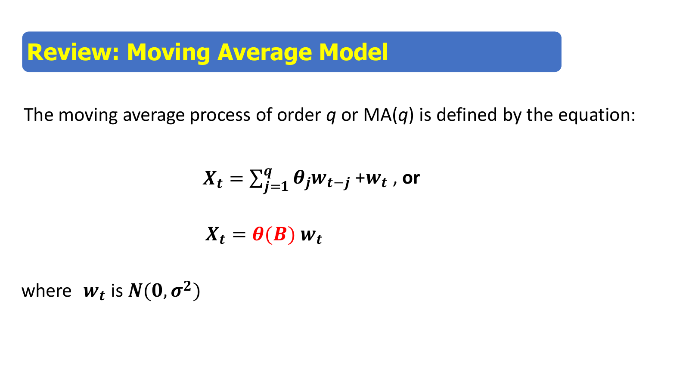
MA(q) นิยามด้วย \(X_t=\sum_{j=1}^{q}\theta_jw_{t-j}+w_t\) หรือ \(X_t=\) θ(B) \(w_t\) โดย \(w_t\) มีการแจกแจง \(N(0,\sigma^2)\) ค่าปัจจุบันเป็นผลรวมของ white noise ปัจจุบันและย้อนหลัง q ช่วง รายละเอียดและการพิสูจน์อยู่ใน Lesson 5 หัวข้อ 3 ถึง 7
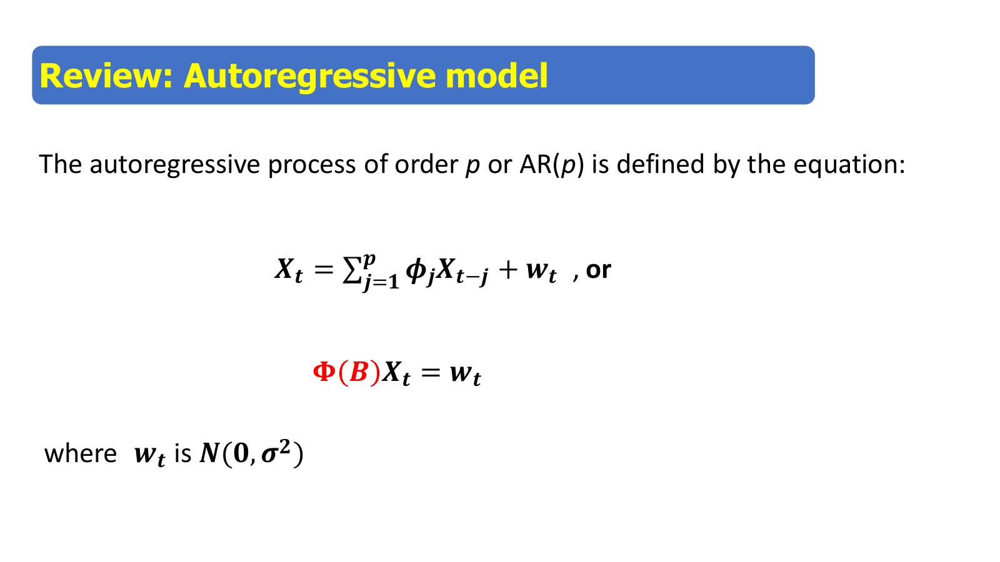
AR(p) นิยามด้วย \(X_t=\sum_{j=1}^{p}\phi_jX_{t-j}+w_t\) หรือ Φ(B) \(X_t=w_t\) ค่าปัจจุบันเป็นผลรวมถ่วงน้ำหนักของค่าของตัวเองย้อนหลัง p ช่วง บวก white noise ของเวลาปัจจุบัน
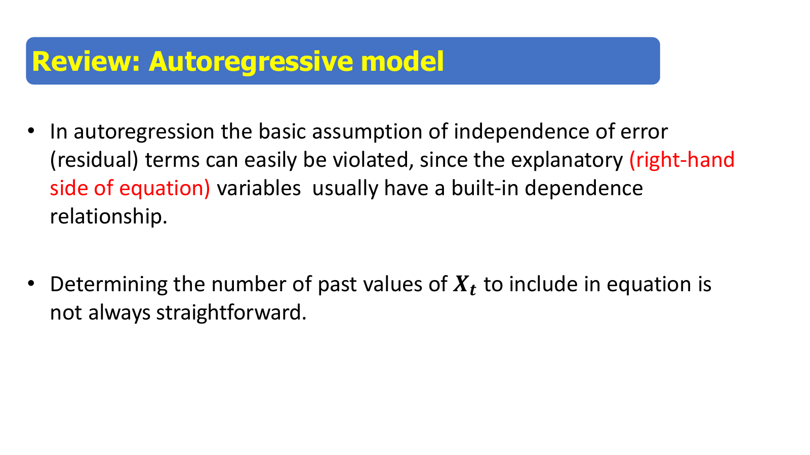
ใน autoregression สมมติฐานพื้นฐานเรื่อง independence ของ error terms ไม่เป็นจริงได้ง่าย เพราะตัวแปรอธิบาย (right-hand side of equation) มีความสัมพันธ์กันเองโดยธรรมชาติ ตัวแปรอธิบายคือ \(X_{t-1},X_{t-2},\dots\) ซึ่งเป็นค่าของ series เดียวกันต่างเวลา จึงสัมพันธ์กัน ข้อที่สอง การตัดสินว่าต้องใช้ค่าในอดีตของ \(X_t\) กี่ค่า ไม่ตรงไปตรงมาเสมอ ข้อนี้คือปัญหาการเลือกอันดับ p ซึ่งเครื่องมือที่ใช้แก้คือ PACF ในหัวข้อ 6 ถึง 8
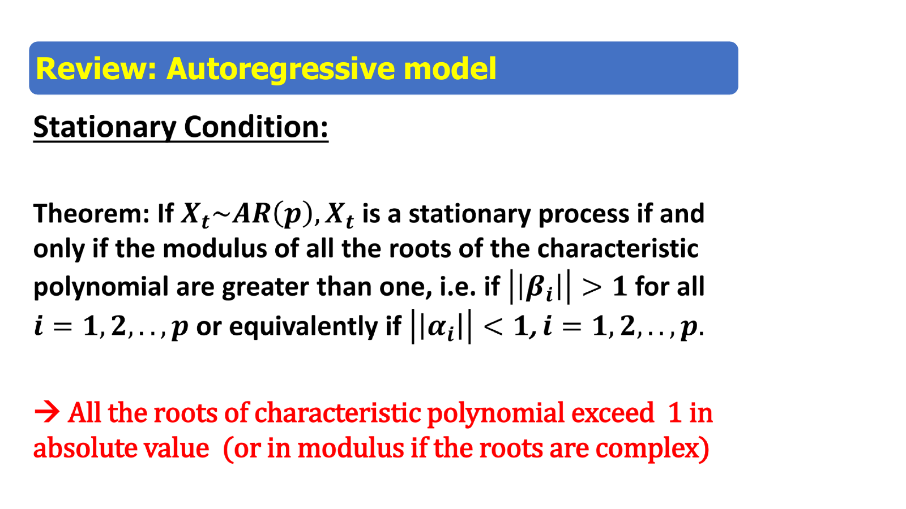
หน้านี้ทวน theorem จาก Lesson 5: ถ้า \(X_t\sim AR(p)\) แล้ว \(X_t\) เป็น stationary ก็ต่อเมื่อ modulus ของรากทุกตัวของ characteristic polynomial มากกว่าหนึ่ง คือ \(|\beta_i|>1\) ทุก i หรือเทียบเท่ากับ \(|\alpha_i|<1\) ทุก i สไลด์สรุปเป็นข้อความสีแดง: All the roots of characteristic polynomial exceed 1 in absolute value (or in modulus if the roots are complex) ประโยคนี้เป็นรูปที่ใช้ตลอดบทนี้และ Lesson 7
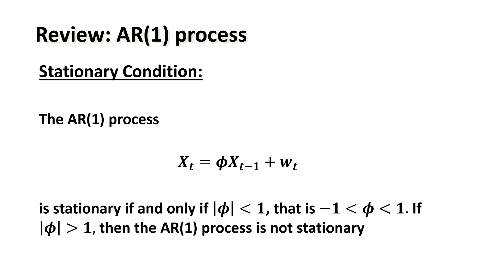
AR(1) \(X_t=\phi X_{t-1}+w_t\) เป็น stationary ก็ต่อเมื่อ \(|\phi|<1\) คือ \(-1<\phi<1\) ถ้า \(|\phi|>1\) ไม่ stationary ข้อนี้เป็นกรณีพิเศษของ theorem: \(\Phi(x)=1-\phi x\) มีรากเดียวคือ \(x=1/\phi\) และ \(|1/\phi|>1\) เท่ากับ \(|\phi|<1\)
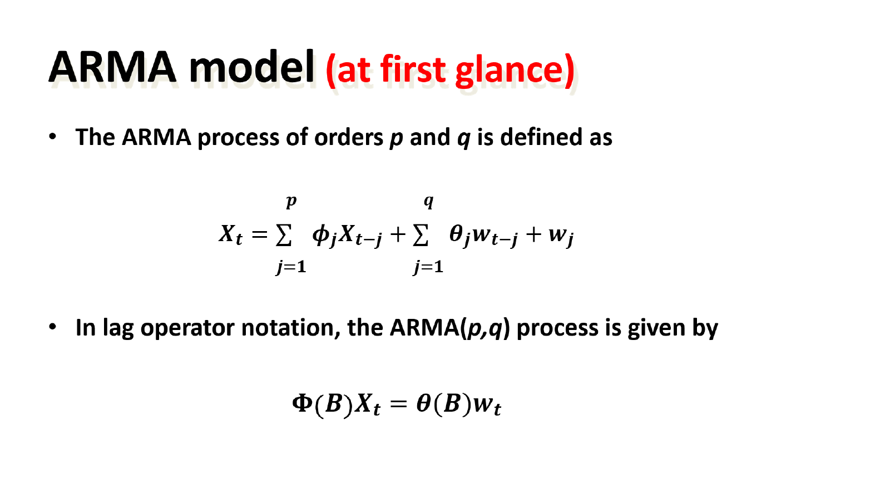
ARMA process ที่มีอันดับ p และ q นิยามด้วย \(X_t=\sum_{j=1}^{p}\phi_jX_{t-j}+\sum_{j=1}^{q}\theta_jw_{t-j}+w_t\) และในรูป lag operator คือ \(\Phi(B)X_t=\theta(B)w_t\) สไลด์กำกับหัวเรื่องว่า (at first glance) โมเดลนี้รวมส่วน AR ไว้ทางซ้ายและส่วน MA ไว้ทางขวา ตัวอย่าง ARMA(1,1): \(X_t=\phi X_{t-1}+w_t+\theta w_{t-1}\) เขียนเป็น \((1-\phi B)X_t=(1+\theta B)w_t\) ในสมการของสไลด์ พจน์สุดท้ายพิมพ์เป็น \(w_j\) ซึ่งหมายถึง \(w_t\)
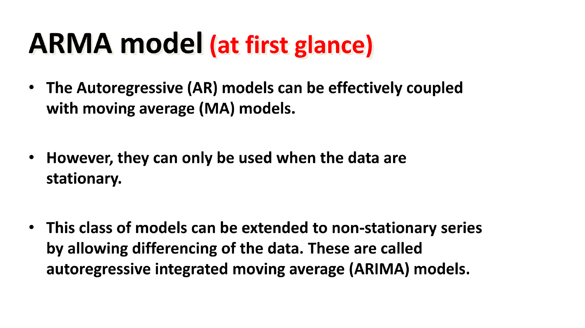
AR models ใช้ร่วมกับ MA models ได้อย่างมีประสิทธิภาพ แต่ใช้ได้เฉพาะเมื่อข้อมูล stationary โมเดลตระกูลนี้ขยายไปยัง non-stationary series ได้โดยยอมให้ทำ differencing กับข้อมูล ซึ่งเรียกว่า autoregressive integrated moving average (ARIMA) models หน้านี้จึงเป็นแผนที่ของบท: หัวข้อ 2 ถึง 8 ศึกษาโมเดล stationary ให้ครบ และหัวข้อ 9 ถึง 10 เพิ่ม differencing
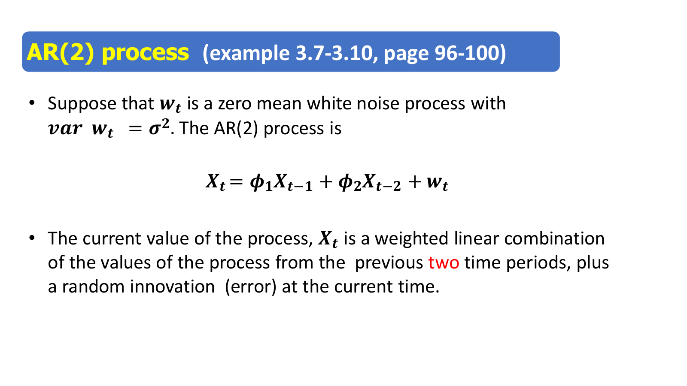
ให้ \(w_t\) เป็น zero mean white noise ที่มีความแปรปรวน \(\sigma^2\) AR(2) คือ \(X_t=\phi_1X_{t-1}+\phi_2X_{t-2}+w_t\) ค่าปัจจุบันเป็น weighted linear combination ของค่าจากช่วงเวลาก่อนหน้า two ช่วง บวก random innovation ของเวลาปัจจุบัน เมื่อเทียบกับ AR(1) ซึ่งจำเฉพาะเมื่อวาน AR(2) จำทั้งเมื่อวานและเมื่อวานซืน การมีสองค่าทำให้โมเดลสร้างพฤติกรรมแบบแกว่งเป็นคลื่นได้ เช่น ถ้า \(\phi_2\) ติดลบ ค่าที่สูงเมื่อสองวันก่อนจะดึงค่าวันนี้ลง
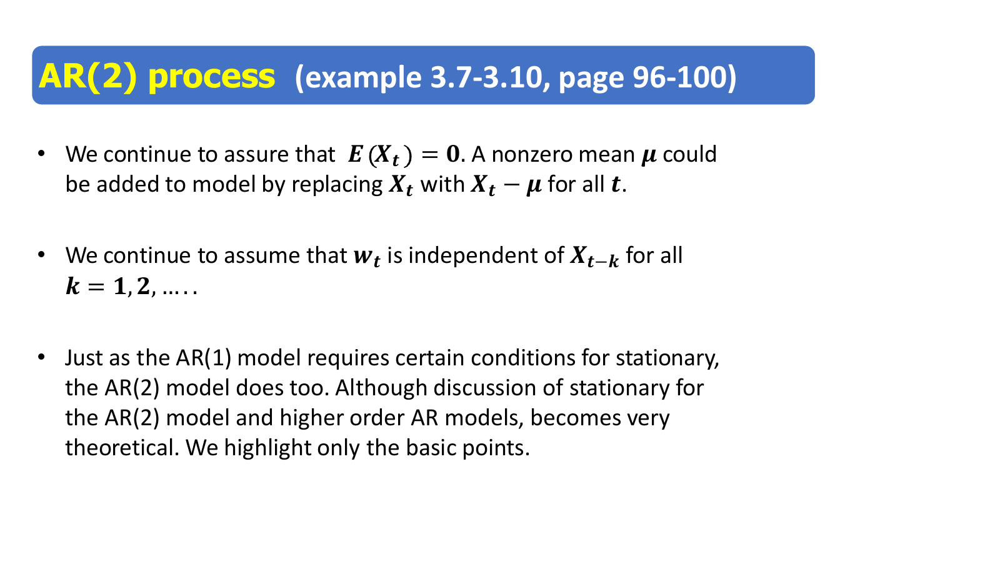
ยังคงสมมติว่า \(E(X_t)=0\) ถ้าค่าเฉลี่ย \(\mu\) ไม่เป็นศูนย์ ให้แทน \(X_t\) ด้วย \(X_t-\mu\) ทุกเวลา และยังสมมติว่า \(w_t\) เป็นอิสระจาก \(X_{t-k}\) สำหรับทุก \(k=1,2,\dots\) เช่นเดียวกับ AR(1) ที่ต้องมีเงื่อนไขจึงจะ stationary AR(2) ก็ต้องมี สไลด์ระบุว่าเรื่อง stationarity ของ AR(2) และ AR อันดับสูงเป็นทฤษฎีมาก จึงเน้นเฉพาะจุดพื้นฐาน
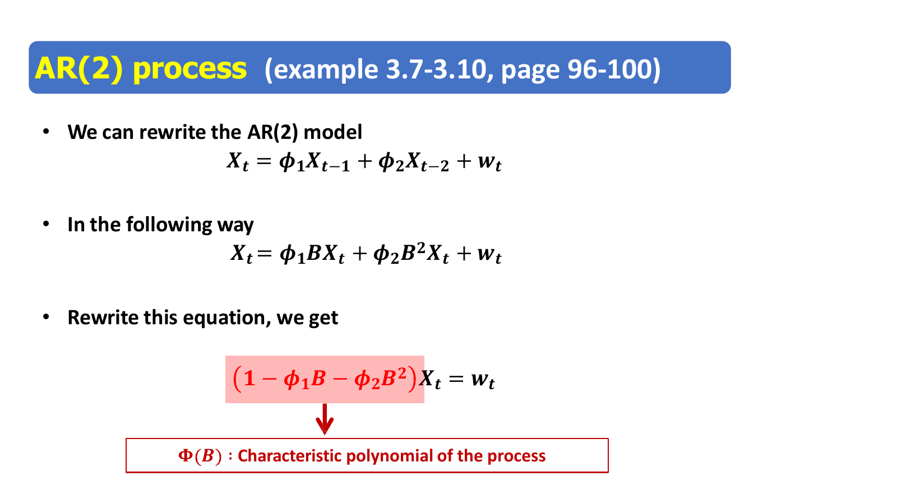
เขียน \(X_{t-1}=BX_t\) และ \(X_{t-2}=B^2X_t\) จะได้ \(X_t=\phi_1BX_t+\phi_2B^2X_t+w_t\) ย้ายพจน์ของ X ไปทางซ้ายได้ \((1-\phi_1B-\phi_2B^2)X_t=w_t\) วงเล็บทางซ้ายคือ \(\Phi(B)\) ซึ่งสไลด์เรียกว่า Characteristic polynomial of the process
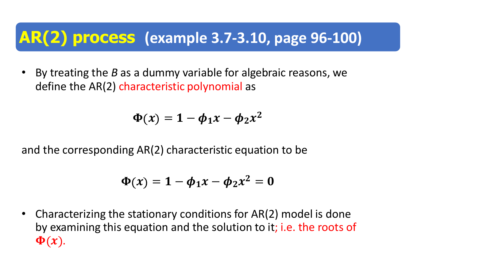
เมื่อมอง B เป็นตัวแปรสมมติเพื่อการคำนวณทางพีชคณิต นิยาม AR(2) characteristic polynomial เป็น \(\Phi(x)=1-\phi_1x-\phi_2x^2\) และ characteristic equation เป็น \(\Phi(x)=1-\phi_1x-\phi_2x^2=0\) เงื่อนไข stationary ของ AR(2) ได้จากการตรวจสมการนี้และคำตอบของมัน ; i.e. the roots of Φ(x). polynomial คือนิพจน์ ส่วน equation คือการตั้งนิพจน์นั้นเท่ากับศูนย์เพื่อหาราก
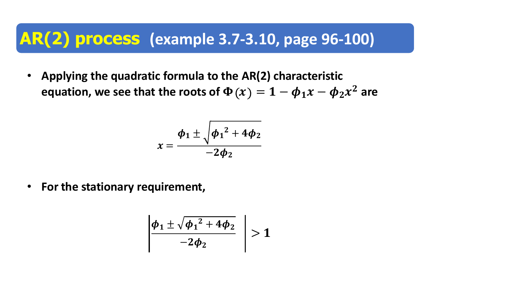
ใช้สูตรกำลังสองกับ \(\Phi(x)=1-\phi_1x-\phi_2x^2\) ได้ราก \(x=\dfrac{\phi_1\pm\sqrt{\phi_1^2+4\phi_2}}{-2\phi_2}\) และเงื่อนไข stationary คือค่าสัมบูรณ์ของรากทั้งสองมากกว่า 1
\(-\phi_2x^2-\phi_1x+1=0\) จึงได้ \(a=-\phi_2\), \(b=-\phi_1\), \(c=1\)
\(x=\dfrac{\phi_1\pm\sqrt{\phi_1^2+4\phi_2}}{-2\phi_2}\) ตรงกับสไลด์
ในราก: \(1.1^2+4(-0.3)=1.21-1.2=0.01\) รากที่สองคือ 0.1 ตัวหารคือ \(-2(-0.3)=0.6\)
\(x=(1.1\pm0.1)/0.6=2\) และ \(1.667\) ทั้งสองมากกว่า 1 จึง stationary
ในราก: \(1+4(-0.5)=-1\) ติดลบ รากจึงเป็นจำนวนเชิงซ้อน ตัวหารคือ 1
\(x=1\pm i\) modulus คือ \(\sqrt{1^2+1^2}=1.414\) มากกว่า 1 จึง stationary
ค่าใต้ราก \(\phi_1^2+4\phi_2\) บอกชนิดของราก: เป็นบวกได้รากจริงสองค่า เป็นศูนย์ได้รากจริงซ้ำ และเป็นลบได้รากเชิงซ้อนคู่หนึ่ง
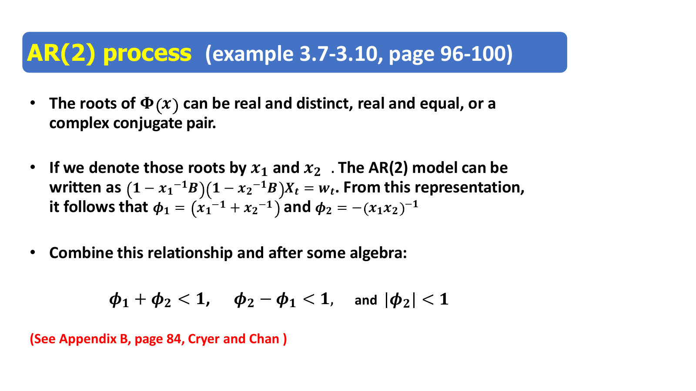
รากของ \(\Phi(x)\) เป็นได้สามแบบ คือ real and distinct, real and equal หรือ complex conjugate pair ถ้าเรียกรากว่า \(x_1\) และ \(x_2\) โมเดลเขียนได้เป็น \((1-x_1^{-1}B)(1-x_2^{-1}B)X_t=w_t\) ซึ่งให้ \(\phi_1=x_1^{-1}+x_2^{-1}\) และ \(\phi_2=-(x_1x_2)^{-1}\) เมื่อรวมความสัมพันธ์นี้กับเงื่อนไขที่รากต้องมากกว่า 1 จะได้เงื่อนไขในรูปของสัมประสิทธิ์โดยตรง: \(\phi_1+\phi_2<1\), \(\phi_2-\phi_1<1\) และ \(|\phi_2|<1\) สไลด์อ้างที่มาว่า (See Appendix B, page 84, Cryer and Chan ) ประโยชน์ของรูปนี้คือ ตรวจ stationarity ได้โดยไม่ต้องหาราก
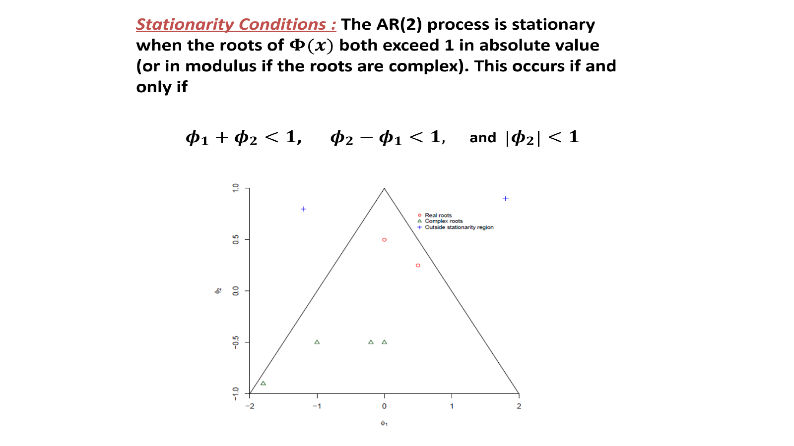
หน้านี้สรุป Stationarity Conditions : AR(2) เป็น stationary เมื่อรากทั้งสองของ \(\Phi(x)\) มากกว่า 1 ในค่าสัมบูรณ์ หรือใน modulus ถ้ารากเป็นเชิงซ้อน ซึ่งเกิดขึ้นก็ต่อเมื่อ \(\phi_1+\phi_2<1\), \(\phi_2-\phi_1<1\) และ \(|\phi_2|<1\) เมื่อวาดบนระนาบที่แกนนอนเป็น \(\phi_1\) และแกนตั้งเป็น \(\phi_2\) สามเงื่อนไขนี้ล้อมเป็นสามเหลี่ยมที่มีจุดยอดที่ \((-2,-1)\), \((2,-1)\) และ \((0,1)\) จุดที่อยู่ในสามเหลี่ยมคือโมเดลที่ stationary กราฟแยกจุดที่มีรากจริงกับจุดที่มีรากเชิงซ้อน และแสดงจุดที่อยู่นอกบริเวณ
| \((\phi_1,\phi_2)\) | \(\phi_1+\phi_2\) | \(\phi_2-\phi_1\) | \(|\phi_2|\) | Stationary | ราก (จาก R) |
|---|---|---|---|---|---|
| (0.5, −0.5) | 0 | −1 | 0.5 | ใช่ | 0.5 ± 1.323i, modulus 1.414 |
| (1.1, −0.3) | 0.8 | −1.4 | 0.3 | ใช่ | 1.667 และ 2 |
| (−0.5, 0.25) | −0.25 | 0.75 | 0.25 | ใช่ | −1.236 และ 3.236 |
| (1, −0.5) | 0.5 | −1.5 | 0.5 | ใช่ | 1 ± i, modulus 1.414 |
| (1.5, −0.75) | 0.75 | −2.25 | 0.75 | ใช่ | 1 ± 0.577i, modulus 1.155 |
| (1.7, −0.7) | 1.0 | −2.4 | 0.7 | ไม่ | 1 และ 1.429 |
ห้าแถวแรกคือตัวอย่างในสไลด์หน้า 20 และ 21 ทุกตัวผ่านทั้งสามข้อ แถวสุดท้ายคือตัวอย่าง (a) ในหน้า 51 ซึ่ง \(\phi_1+\phi_2=1\) ไม่น้อยกว่า 1 จึงไม่ผ่าน ตรงกับที่มีรากหนึ่งตัวเท่ากับ 1 พอดี ผลจากเงื่อนไขและจากรากตรงกันทุกแถว
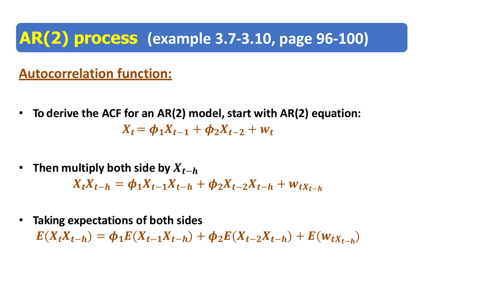
สไลด์เริ่มหัวข้อ Autocorrelation function: ด้วยวิธีเดียวกับ AR(1) ใน Lesson 5 เริ่มจากสมการ \(X_t=\phi_1X_{t-1}+\phi_2X_{t-2}+w_t\) คูณทั้งสองข้างด้วย \(X_{t-h}\) ได้ \(X_tX_{t-h}=\phi_1X_{t-1}X_{t-h}+\phi_2X_{t-2}X_{t-h}+w_tX_{t-h}\) แล้วหาค่าคาดหมายของทั้งสองข้าง ได้ \(E(X_tX_{t-h})=\phi_1E(X_{t-1}X_{t-h})+\phi_2E(X_{t-2}X_{t-h})+E(w_tX_{t-h})\)
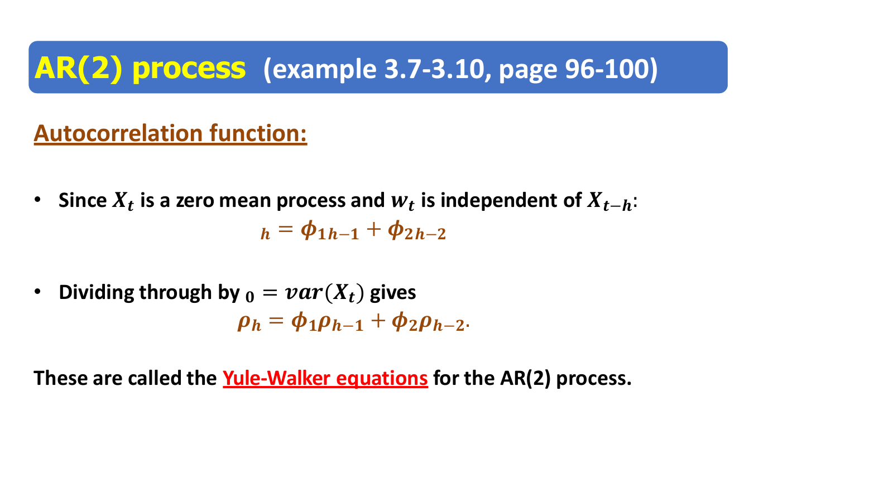
เนื่องจาก \(X_t\) มีค่าเฉลี่ยศูนย์ ค่าคาดหมายของผลคูณจึงเป็น autocovariance และเนื่องจาก \(w_t\) เป็นอิสระจาก \(X_{t-h}\) พจน์สุดท้ายเป็น 0 จึงได้ \(\gamma_h=\phi_1\gamma_{h-1}+\phi_2\gamma_{h-2}\) หารตลอดด้วย \(\gamma_0=\mathrm{var}(X_t)\) ได้ \(\rho_h=\phi_1\rho_{h-1}+\phi_2\rho_{h-2}\) สมการนี้เรียกว่า Yule-Walker equations สำหรับ AR(2) ความหมายคือ ACF ที่ lag ใดก็ตามคำนวณได้จากสอง lag ก่อนหน้า ด้วยสัมประสิทธิ์ชุดเดียวกับโมเดล ACF จึงเป็นไปตามกฎเดียวกับข้อมูล
\(\rho_1=\phi_1\rho_0+\phi_2\rho_{-1}\) ใช้ \(\rho_0=1\) และ \(\rho_{-1}=\rho_1\) ได้ \(\rho_1=\phi_1+\phi_2\rho_1\) จึงได้
\[\rho_1=\frac{\phi_1}{1-\phi_2}\]ใช้ \(\rho_h=\phi_1\rho_{h-1}+\phi_2\rho_{h-2}\) ต่อไปทีละ lag
\(\rho_1=0.5/(1+0.5)=0.333\)
\(\rho_2=0.5(0.333)-0.5=-0.333\)
\(\rho_3=0.5(-0.333)-0.5(0.333)=-0.333\)
\(\rho_4=0.5(-0.333)-0.5(-0.333)=0\)
ค่าในตัวอย่างตรงกับ ARMAacf(ar = c(0.5,-0.5)) ซึ่งให้ 0.333, −0.333, −0.333, 0, 0.167
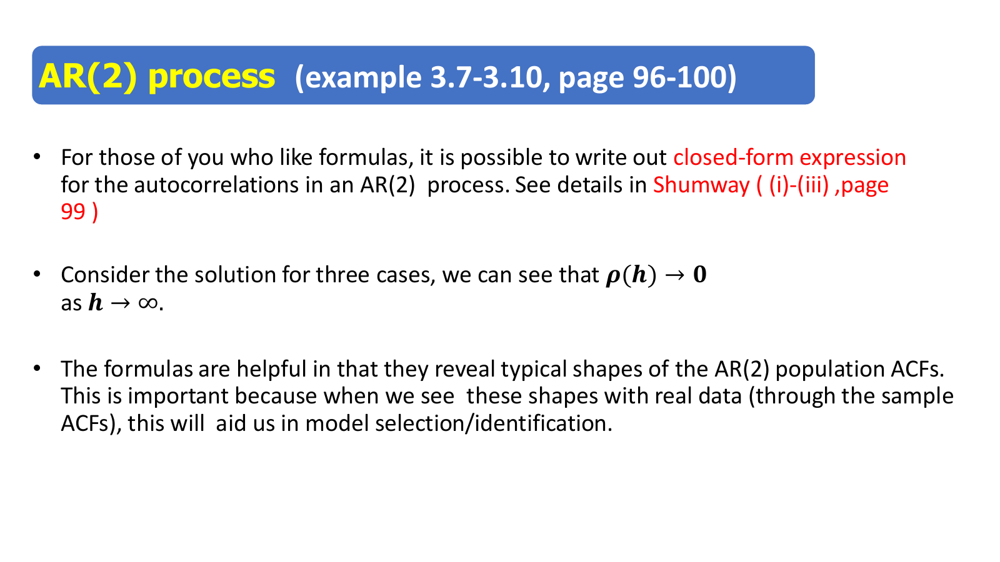
ACF ของ AR(2) เขียนเป็น closed-form expression ได้ รายละเอียดอยู่ใน Shumway ( (i)-(iii) ,page 99 ) ซึ่งแยกสามกรณีตามชนิดของราก จากคำตอบของทั้งสามกรณีเห็นได้ว่า \(\rho(h)\to0\) เมื่อ \(h\to\infty\) สไลด์ระบุว่าสูตรเหล่านี้มีประโยชน์เพราะเผยรูปทรงทั่วไปของ population ACF ของ AR(2) เมื่อเห็นรูปทรงเหล่านี้ใน sample ACF ของข้อมูลจริง จะช่วยในการเลือกและระบุโมเดล วิชานี้ไม่ต้องจำสูตร closed-form สิ่งที่ต้องรู้คือรูปทรงในหน้าถัดไป
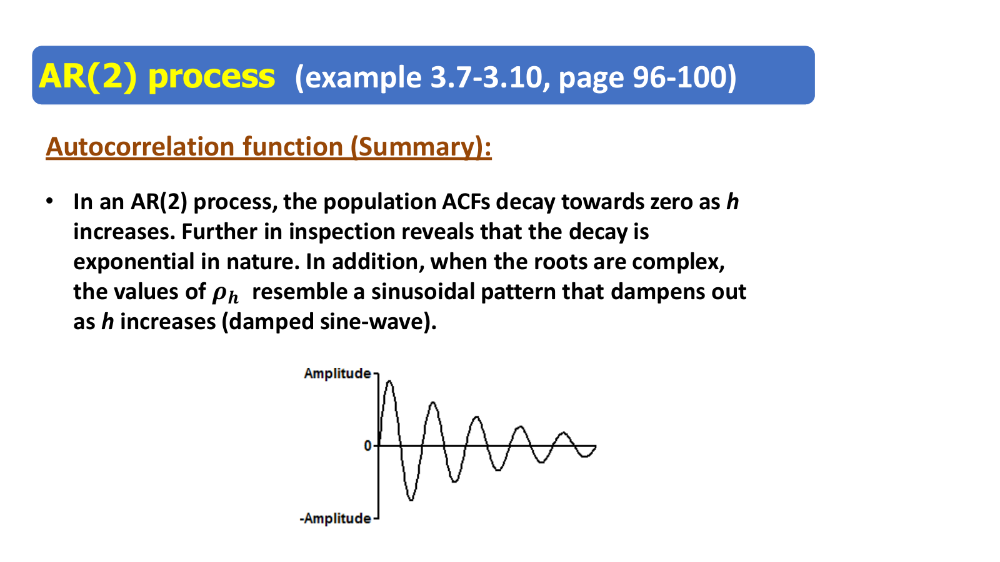
Autocorrelation function (Summary): ใน AR(2) population ACF ลดลงเข้าหาศูนย์เมื่อ h เพิ่มขึ้น และการลดลงมีลักษณะ exponential นอกจากนี้ เมื่อรากเป็นเชิงซ้อน ค่าของ \(\rho_h\) มีรูปแบบคล้ายคลื่นไซน์ที่ค่อย ๆ จางลงเมื่อ h เพิ่มขึ้น เรียกว่า damped sine-wave กราฟในสไลด์แสดงคลื่นที่ amplitude ลดลงทุกรอบ เปรียบได้กับลูกตุ้มที่แกว่งแล้วค่อย ๆ หยุด: ยังแกว่งข้ามศูนย์ไปมา แต่ระยะแกว่งสั้นลงทุกครั้ง
| ชนิดของราก | เกิดเมื่อ | รูปทรงของ ACF |
|---|---|---|
| รากจริง | \(\phi_1^2+4\phi_2\ge0\) | ลดลงแบบ exponential อาจสลับเครื่องหมาย |
| รากเชิงซ้อน | \(\phi_1^2+4\phi_2<0\) | damped sine-wave |
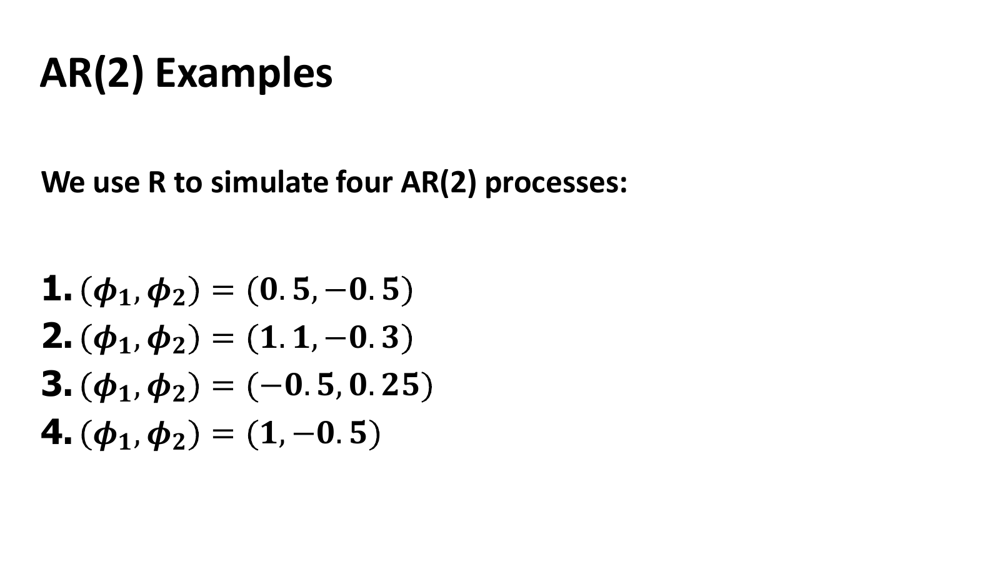
สไลด์ใช้ R จำลอง AR(2) สี่ชุด คือ \((\phi_1,\phi_2)=(0.5,-0.5)\), \((1.1,-0.3)\), \((-0.5,0.25)\) และ \((1,-0.5)\) โค้ดอยู่ในไฟล์ Codes2 ของ Lecture 5 ตารางต่อไปนี้ให้ ACF ทางทฤษฎีจาก ARMAacf ของทั้งสี่ชุด
| \((\phi_1,\phi_2)\) | ราก | \(\rho_1\) | \(\rho_2\) | \(\rho_3\) | \(\rho_4\) | \(\rho_5\) | รูปทรง |
|---|---|---|---|---|---|---|---|
| (0.5, −0.5) | เชิงซ้อน | 0.333 | −0.333 | −0.333 | 0 | 0.167 | คลื่นที่จางลง |
| (1.1, −0.3) | จริง | 0.846 | 0.631 | 0.440 | 0.295 | 0.192 | บวกทั้งหมด ลดลงเรียบ |
| (−0.5, 0.25) | จริง | −0.667 | 0.583 | −0.458 | 0.375 | −0.302 | สลับเครื่องหมาย ลดลง |
| (1, −0.5) | เชิงซ้อน | 0.667 | 0.167 | −0.167 | −0.250 | −0.167 | คลื่นที่จางลง |
สองชุดที่มีรากจริงลดลงแบบ exponential ชุดที่สองเป็นบวกทั้งหมด ส่วนชุดที่สามสลับเครื่องหมายเพราะมีรากที่เป็นลบ สองชุดที่มีรากเชิงซ้อนข้ามศูนย์เป็นคลื่น ตรงกับสรุปในหน้า 19
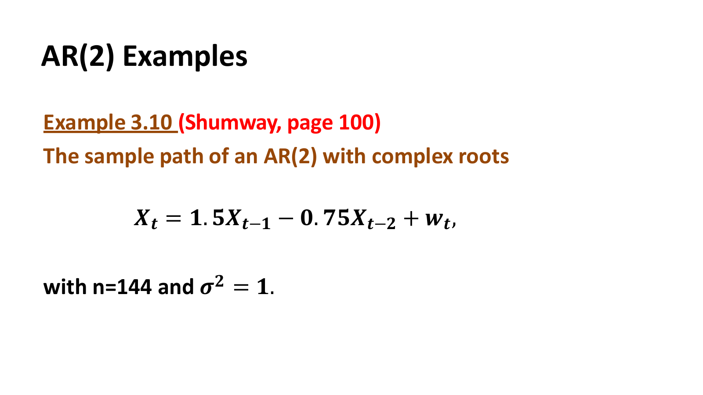
Example 3.10 (Shumway, page 100) The sample path of an AR(2) with complex roots คือ \(X_t=1.5X_{t-1}-0.75X_{t-2}+w_t\) โดย n = 144 และ \(\sigma^2=1\) ค่าใต้รากคือ \(1.5^2+4(-0.75)=-0.75\) ติดลบ รากคือ \(1\pm0.577i\) มี modulus 1.155 มากกว่า 1 จึง stationary ACF ทางทฤษฎีคือ 0.857, 0.536, 0.161, −0.161, −0.362, −0.422, −0.362, −0.226, −0.068, 0.068, 0.153, 0.178 ที่ lag 1 ถึง 12 ค่าลดจากบวกเป็นลบ ต่ำสุดที่ lag 6 แล้วกลับเป็นบวก สูงสุดอีกครั้งที่ประมาณ lag 12 หนึ่งรอบของคลื่นจึงยาวประมาณ 12 ช่วงเวลา ข้อมูลจากโมเดลนี้จึงขึ้นลงเป็นรอบประมาณ 12 ช่วง ทั้งที่ไม่มีส่วน seasonal ในโมเดล
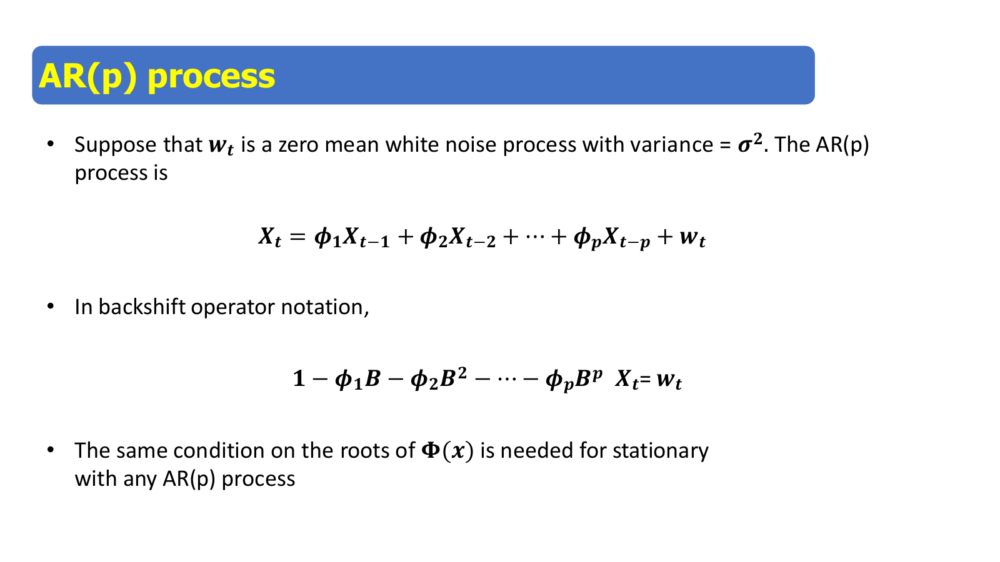
AR(p) คือ \(X_t=\phi_1X_{t-1}+\phi_2X_{t-2}+\dots+\phi_pX_{t-p}+w_t\) และในรูป backshift คือ \((1-\phi_1B-\phi_2B^2-\dots-\phi_pB^p)X_t=w_t\) เงื่อนไขเดียวกันบนรากของ \(\Phi(x)\) ใช้กับ stationarity ของ AR(p) ทุกอันดับ คือรากทั้ง p ตัวต้องมากกว่า 1 ในค่าสัมบูรณ์
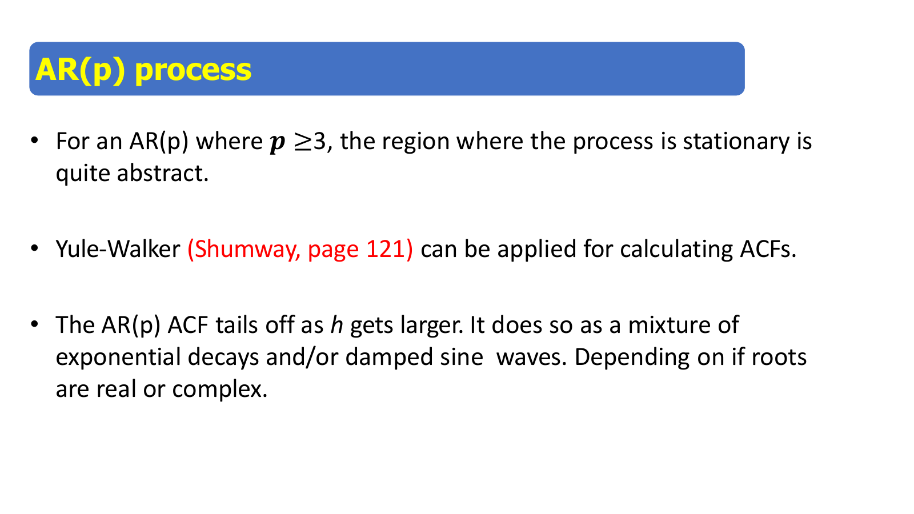
สำหรับ AR(p) ที่ \(p\ge3\) บริเวณที่ process เป็น stationary ค่อนข้างเป็นนามธรรม ไม่มีรูปง่ายแบบสามเหลี่ยมของ AR(2) การคำนวณ ACF ใช้ Yule-Walker (Shumway, page 121) ได้ และ ACF ของ AR(p) tails off เมื่อ h มากขึ้น โดยเป็นส่วนผสมของ exponential decays และ damped sine waves ขึ้นกับว่ารากเป็นจำนวนจริงหรือเชิงซ้อน
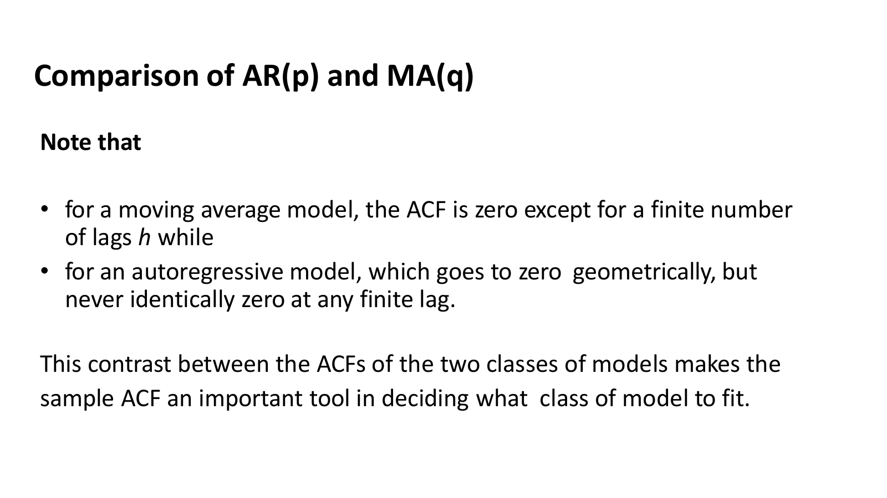
สำหรับ moving average model ACF เป็นศูนย์ยกเว้นที่ lag จำนวนจำกัด ส่วน autoregressive model ACF เข้าหาศูนย์แบบ geometric แต่ไม่เป็นศูนย์พอดีที่ lag ใดเลย ความต่างนี้ทำให้ sample ACF เป็นเครื่องมือสำคัญในการตัดสินว่าจะ fit โมเดลตระกูลใด ข้อจำกัดคือ ACF บอกได้ว่าเป็น AR แต่บอกอันดับ p ไม่ได้ เพราะ ACF ของ AR ทุกอันดับค่อย ๆ ลดลงเหมือนกัน
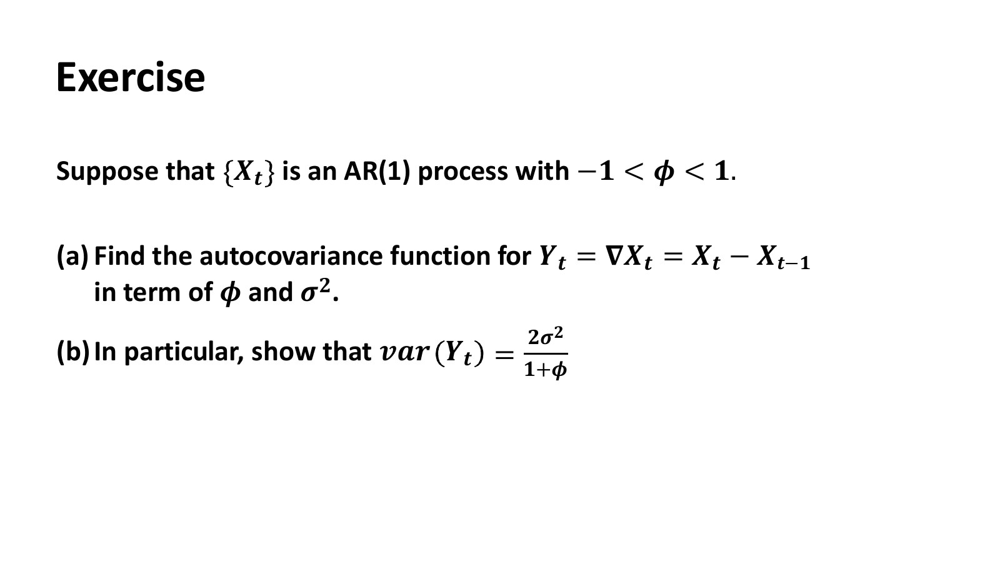
โจทย์ให้ \(X_t\) เป็น AR(1) ที่ \(-1<\phi<1\) (ก) หา autocovariance function ของ \(Y_t=\nabla X_t=X_t-X_{t-1}\) ในรูปของ \(\phi\) และ \(\sigma^2\) (ข) แสดงว่า \(\mathrm{var}(Y_t)=\dfrac{2\sigma^2}{1+\phi}\) สไลด์ไม่มีเฉลย วิธีทำใช้ผลของ AR(1) จาก Lesson 5 คือ \(\gamma_X(h)=\dfrac{\sigma^2\phi^{|h|}}{1-\phi^2}\)
\(\gamma_Y(h)=\mathrm{Cov}(X_{t+h}-X_{t+h-1},\ X_t-X_{t-1})\) กระจายสี่คู่
\[\gamma_Y(h)=\gamma_X(h)-\gamma_X(h+1)-\gamma_X(h-1)+\gamma_X(h)=2\gamma_X(h)-\gamma_X(h+1)-\gamma_X(h-1)\]\(\gamma_X(1)=\gamma_X(-1)=\phi\gamma_X(0)\) จึงได้ \(\gamma_Y(0)=2\gamma_X(0)-2\phi\gamma_X(0)=2\gamma_X(0)(1-\phi)\)
\[\mathrm{var}(Y_t)=\frac{2\sigma^2(1-\phi)}{1-\phi^2}=\frac{2\sigma^2(1-\phi)}{(1-\phi)(1+\phi)}=\frac{2\sigma^2}{1+\phi}\]\(\gamma_Y(h)=\gamma_X(0)\,[2\phi^h-\phi^{h+1}-\phi^{h-1}]=\gamma_X(0)\,\phi^{h-1}\,[2\phi-\phi^2-1]=-\gamma_X(0)\,\phi^{h-1}(1-\phi)^2\)
\[\gamma_Y(h)=-\frac{\sigma^2\phi^{h-1}(1-\phi)^2}{1-\phi^2}=-\frac{\sigma^2\phi^{h-1}(1-\phi)}{1+\phi}\]ตรวจด้วยตัวเลข: \(\phi=0.5\), \(\sigma^2=1\) ได้ \(\gamma_Y(0)=2/1.5=1.333\) และ \(\gamma_Y(1)=-(0.5)/1.5=-0.333\) จึงได้ \(\rho_Y(1)=-0.25\) ผลต่างของ AR(1) ที่ stationary อยู่แล้วมี autocorrelation ที่ lag 1 เป็นลบ ซึ่งเป็นผลของการทำ differencing กับข้อมูลที่ไม่จำเป็นต้องทำ
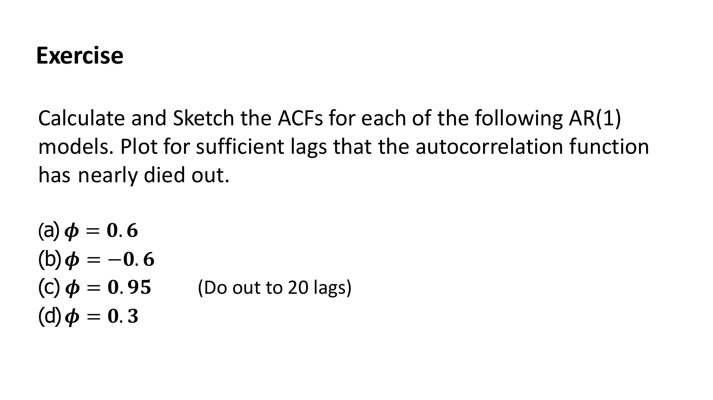
โจทย์ให้คำนวณและวาด ACF ของ AR(1) สี่กรณี คือ \(\phi=0.6\), \(-0.6\), \(0.95\) (ทำถึง 20 lags) และ \(0.3\) โดยวาดให้ถึง lag ที่ ACF เกือบหมดไป ใช้ \(\rho(h)=\phi^h\)
| \(\phi\) | \(\rho_1\) | \(\rho_2\) | \(\rho_3\) | \(\rho_4\) | \(\rho_5\) | lag ที่ค่าต่ำกว่า 0.05 | รูปทรง |
|---|---|---|---|---|---|---|---|
| 0.6 | 0.600 | 0.360 | 0.216 | 0.130 | 0.078 | lag 6 (0.047) | บวก ลดลงปานกลาง |
| −0.6 | −0.600 | 0.360 | −0.216 | 0.130 | −0.078 | lag 6 (0.047) | สลับเครื่องหมาย |
| 0.95 | 0.950 | 0.903 | 0.857 | 0.815 | 0.774 | ยังเป็น 0.358 ที่ lag 20 | บวก ลดลงช้ามาก |
| 0.3 | 0.300 | 0.090 | 0.027 | 0.008 | 0.002 | lag 3 (0.027) | บวก ลดลงเร็วมาก |
กรณี \(\phi=0.95\) ต้องวาดถึง 20 lags เพราะ \(0.95^{20}=0.358\) ยังห่างจากศูนย์มาก ACF ที่ลดลงช้าเช่นนี้ดูคล้ายของข้อมูลที่ไม่ stationary ซึ่งเป็นกรณีที่แยกยากในข้อมูลจริง
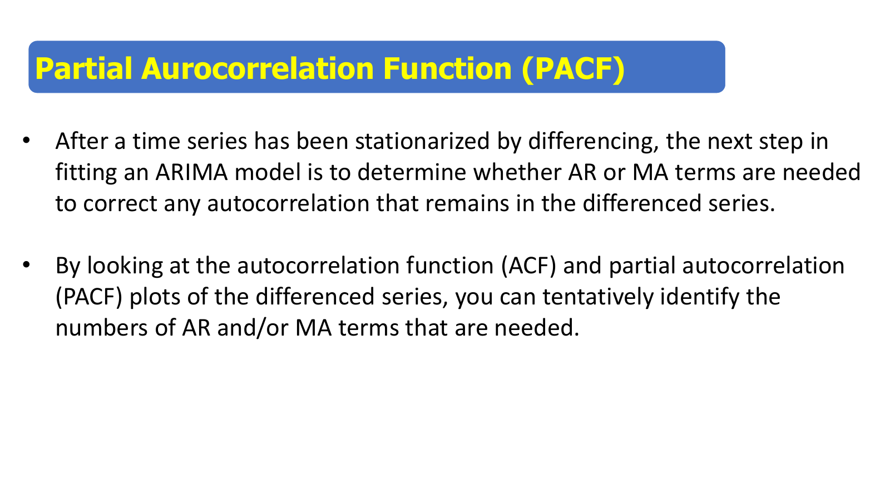
หลังจากทำให้ time series เป็น stationary ด้วย differencing ขั้นถัดไปของการ fit ARIMA คือตัดสินว่าต้องมีพจน์ AR หรือ MA เพื่อแก้ autocorrelation ที่เหลืออยู่ใน series ที่ทำผลต่างแล้ว การดูกราฟ ACF และ PACF ของ series นั้นช่วยระบุจำนวนพจน์ AR และ MA ที่ต้องใช้ได้ในเบื้องต้น
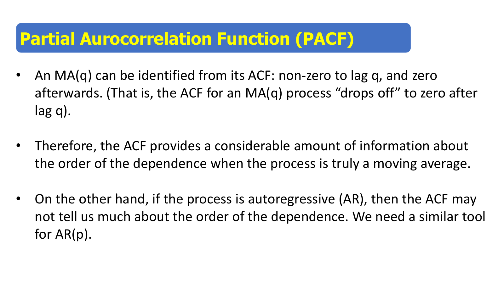
MA(q) ระบุได้จาก ACF เพราะ ACF ไม่เป็นศูนย์ถึง lag q แล้วเป็นศูนย์หลังจากนั้น สไลด์ใช้คำว่า ACF ของ MA(q) “drops off” เป็นศูนย์หลัง lag q ACF จึงให้ข้อมูลมากเกี่ยวกับอันดับของ dependence เมื่อ process เป็น moving average แต่ถ้า process เป็น AR ACF อาจบอกได้ไม่มากเกี่ยวกับอันดับ จึงต้องมีเครื่องมือทำนองเดียวกันสำหรับ AR(p) เหตุผลคือ ใน AR(1) ค่า \(X_t\) ขึ้นกับ \(X_{t-1}\) ซึ่งขึ้นกับ \(X_{t-2}\) อีกทอดหนึ่ง \(X_t\) จึงสัมพันธ์กับ \(X_{t-2}\) ผ่านตัวกลาง แม้ไม่มี \(X_{t-2}\) ในสมการ ACF นับความสัมพันธ์ทางอ้อมนี้ด้วย จึงไม่ตัดเป็นศูนย์
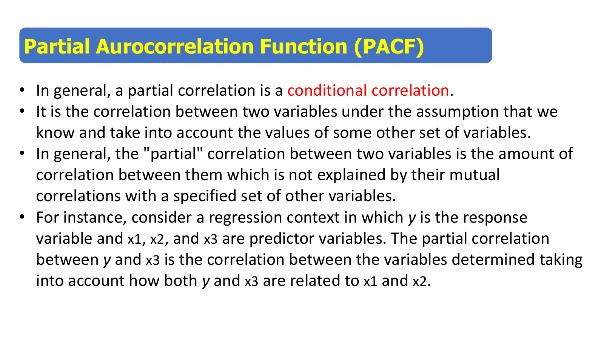
โดยทั่วไป partial correlation คือ conditional correlation เป็น correlation ระหว่างตัวแปรสองตัวภายใต้สมมติฐานว่ารู้และนำค่าของตัวแปรชุดอื่นมาพิจารณาแล้ว กล่าวอีกแบบ คือปริมาณ correlation ระหว่างสองตัวแปรที่ไม่ได้อธิบายด้วย correlation ที่ทั้งสองมีร่วมกับตัวแปรชุดที่ระบุ ตัวอย่างในสไลด์: ใน regression ที่ y เป็นตัวแปรตาม และ x1, x2, x3 เป็นตัวแปรอธิบาย partial correlation ระหว่าง y กับ x3 คือ correlation ที่คิดโดยคำนึงว่าทั้ง y และ x3 สัมพันธ์กับ x1 และ x2 อย่างไร ตัวอย่างในชีวิตจริง: ยอดขายไอศกรีมกับจำนวนคนจมน้ำสัมพันธ์กัน เพราะทั้งสองขึ้นกับอุณหภูมิ เมื่อหักผลของอุณหภูมิออก ความสัมพันธ์ระหว่างสองอย่างนี้หายไป partial correlation วัดส่วนที่เหลือหลังหักตัวกลาง
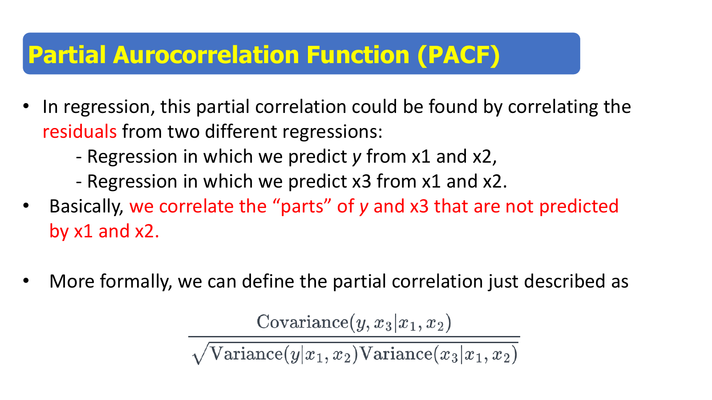
ใน regression partial correlation หาได้จากการหา correlation ระหว่าง residuals ของ regression สองชุด คือ regression ที่ทำนาย y จาก x1 และ x2 กับ regression ที่ทำนาย x3 จาก x1 และ x2 สไลด์สรุปว่า we correlate the “parts” of y and x3 that are not predicted by x1 and x2. และเขียนเป็นสูตรว่า \(\dfrac{\mathrm{Covariance}(y,x_3\mid x_1,x_2)}{\sqrt{\mathrm{Variance}(y\mid x_1,x_2)\,\mathrm{Variance}(x_3\mid x_1,x_2)}}\) สูตรนี้มีรูปเดียวกับ correlation ทั่วไป คือ covariance หารด้วยรากของผลคูณของ variance ต่างกันที่ทุกตัวคิดแบบมีเงื่อนไข เครื่องหมายขีดตั้งอ่านว่า “เมื่อรู้”
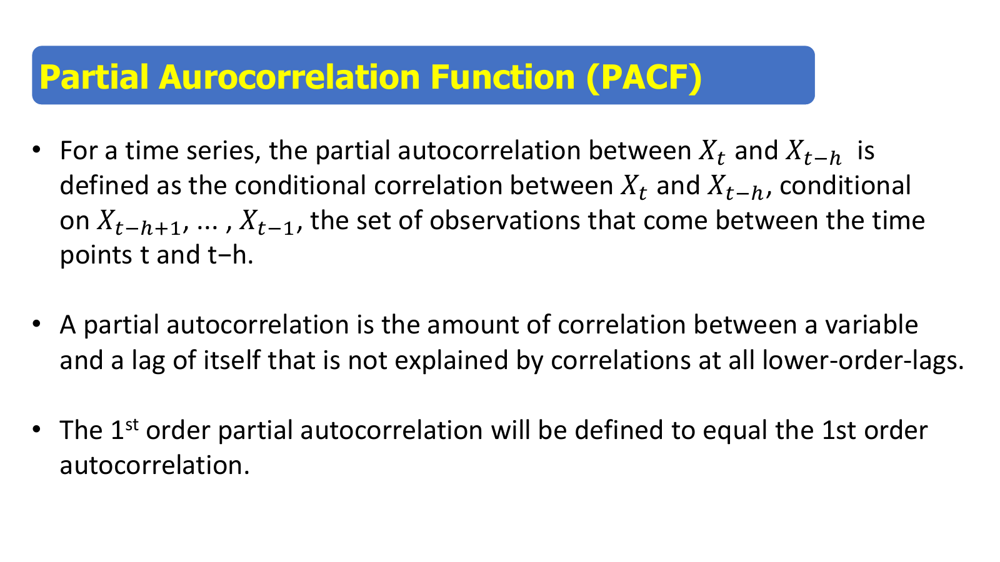
สำหรับ time series partial autocorrelation ระหว่าง \(X_t\) กับ \(X_{t-h}\) นิยามเป็น conditional correlation ระหว่างสองค่านี้ โดยมีเงื่อนไขบน \(X_{t-h+1},\dots,X_{t-1}\) ซึ่งคือชุดของค่าที่อยู่ระหว่างเวลา t กับ t−h Partial autocorrelation คือปริมาณ correlation ระหว่างตัวแปรกับ lag ของตัวเอง ที่ไม่ได้อธิบายด้วย correlation ที่ lag ต่ำกว่าทั้งหมด และ partial autocorrelation อันดับที่ 1 นิยามให้เท่ากับ autocorrelation อันดับที่ 1 เพราะระหว่าง \(X_t\) กับ \(X_{t-1}\) ไม่มีค่าใดคั่นกลางให้หักออก
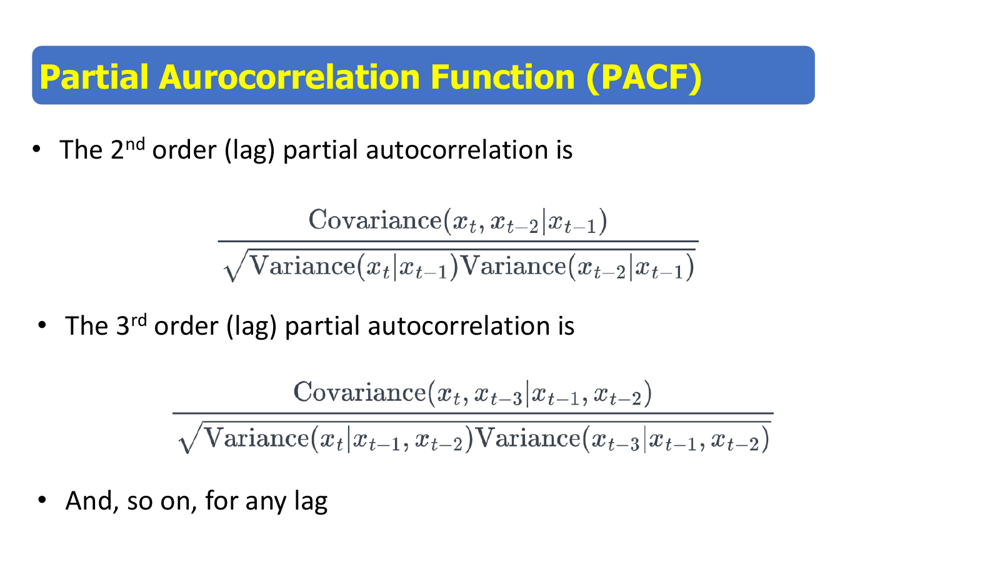
Partial autocorrelation อันดับ 2 คือ \(\dfrac{\mathrm{Covariance}(x_t,x_{t-2}\mid x_{t-1})}{\sqrt{\mathrm{Variance}(x_t\mid x_{t-1})\,\mathrm{Variance}(x_{t-2}\mid x_{t-1})}}\) คือความสัมพันธ์ระหว่างวันนี้กับเมื่อวานซืน หลังหักผลของเมื่อวาน อันดับ 3 คือ \(\dfrac{\mathrm{Covariance}(x_t,x_{t-3}\mid x_{t-1},x_{t-2})}{\sqrt{\mathrm{Variance}(x_t\mid x_{t-1},x_{t-2})\,\mathrm{Variance}(x_{t-3}\mid x_{t-1},x_{t-2})}}\) หักผลของสองค่าที่คั่นกลาง และเป็นเช่นนี้ต่อไปสำหรับทุก lag จำนวนค่าที่หักออกเพิ่มขึ้นหนึ่งค่าทุก lag
| ACF ที่ lag h | PACF ที่ lag h | |
|---|---|---|
| วัดอะไร | ความสัมพันธ์รวมระหว่าง \(X_t\) กับ \(X_{t-h}\) | ความสัมพันธ์โดยตรง หลังหักค่าที่คั่นกลาง |
| รวมความสัมพันธ์ทางอ้อม | รวม | ไม่รวม |
| ที่ lag 1 | เท่ากัน | |
| สัญลักษณ์ | \(\rho(h)\) | \(\phi_{hh}\) |
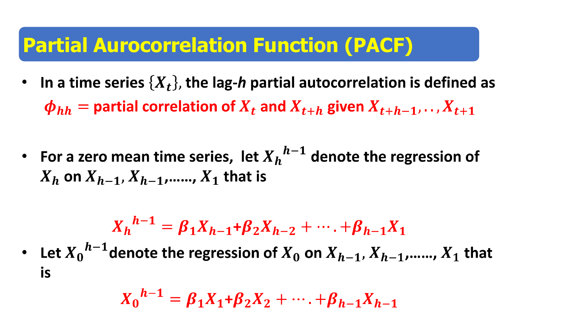
ใน time series \(\{X_t\}\) partial autocorrelation ที่ lag h นิยามว่า φ_hh = partial correlation of X_t and X_{t+h} given X_{t+h−1}, …, X_{t+1} สัญลักษณ์ \(\phi_{hh}\) มีตัวห้อยสองตัวที่เหมือนกัน สำหรับ zero mean time series ให้ \(X_h^{h-1}\) แทน regression ของ \(X_h\) บนค่าที่คั่นกลาง: \(X_h^{h-1}=\beta_1X_{h-1}+\beta_2X_{h-2}+\dots+\beta_{h-1}X_1\) และให้ \(X_0^{h-1}\) แทน regression ของ \(X_0\) บนค่าชุดเดียวกัน: \(X_0^{h-1}=\beta_1X_1+\beta_2X_2+\dots+\beta_{h-1}X_{h-1}\) ตัวยก \(h-1\) หมายถึงใช้ตัวแปรอธิบาย \(h-1\) ตัว สองสมการนี้ทำนายปลายทั้งสองข้าง คือ \(X_h\) และ \(X_0\) จากค่าที่อยู่ตรงกลาง
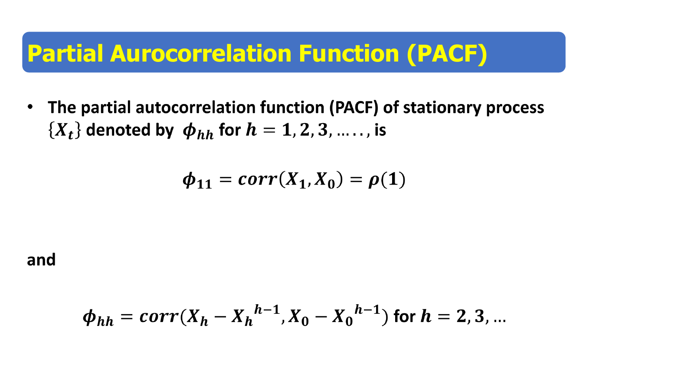
PACF ของ stationary process \(\{X_t\}\) เขียนว่า \(\phi_{hh}\) สำหรับ \(h=1,2,3,\dots\) โดย \(\phi_{11}=\mathrm{corr}(X_1,X_0)=\rho(1)\) และ \(\phi_{hh}=\mathrm{corr}(X_h-X_h^{h-1},\ X_0-X_0^{h-1})\) สำหรับ \(h=2,3,\dots\) คือ correlation ระหว่างส่วนของ \(X_h\) ที่ค่าตรงกลางทำนายไม่ได้ กับส่วนของ \(X_0\) ที่ค่าตรงกลางทำนายไม่ได้ ซึ่งเป็นวิธี residuals ของหน้า 31 ที่ใช้กับ time series
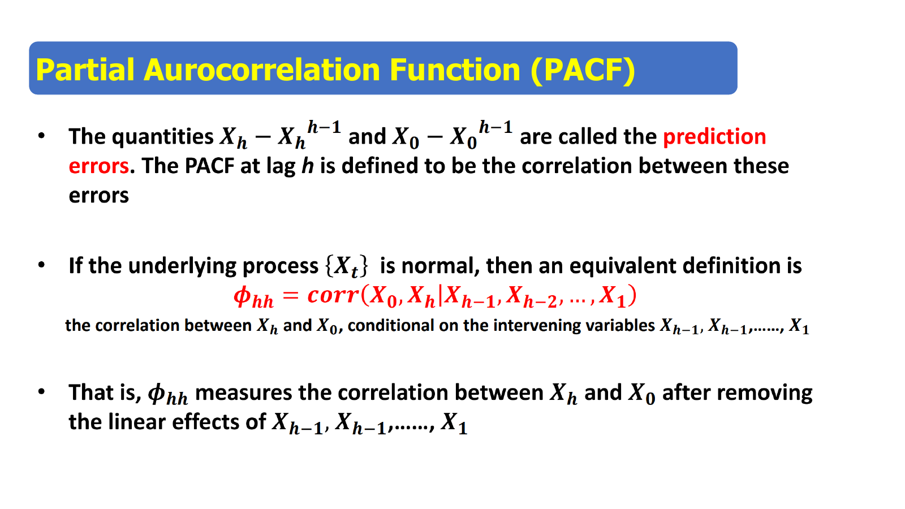
ปริมาณ \(X_h-X_h^{h-1}\) และ \(X_0-X_0^{h-1}\) เรียกว่า prediction errors และ PACF ที่ lag h นิยามเป็น correlation ระหว่าง error ทั้งสอง ถ้า process เป็น normal นิยามที่เทียบเท่ากันคือ φ_hh = corr(X_0, X_h | X_{h−1}, X_{h−2}, …, X_1) คือ correlation ระหว่าง \(X_h\) กับ \(X_0\) โดยมีเงื่อนไขบนตัวแปรที่คั่นกลาง กล่าวคือ \(\phi_{hh}\) วัด correlation ระหว่าง \(X_h\) กับ \(X_0\) หลังนำ linear effects ของ \(X_{h-1},\dots,X_1\) ออกแล้ว
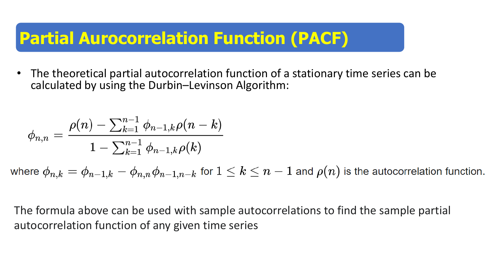
PACF ทางทฤษฎีของ stationary time series คำนวณได้ด้วย Durbin–Levinson Algorithm: \(\phi_{n,n}=\dfrac{\rho(n)-\sum_{k=1}^{n-1}\phi_{n-1,k}\,\rho(n-k)}{1-\sum_{k=1}^{n-1}\phi_{n-1,k}\,\rho(k)}\) โดย \(\phi_{n,k}=\phi_{n-1,k}-\phi_{n,n}\phi_{n-1,n-k}\) สำหรับ \(1\le k\le n-1\) สไลด์ใส่สีว่า The formula above can be used with sample autocorrelations to find the sample partial autocorrelation function of any given time series สูตรนี้คำนวณ PACF จาก ACF โดยไม่ต้องทำ regression จริง และทำทีละ lag โดยใช้ผลของ lag ก่อนหน้า
ผลรวมไม่มีพจน์: \(\phi_{11}=\rho(1)\)
ผลรวมมีพจน์เดียวที่ \(k=1\) ใช้ \(\phi_{1,1}=\rho(1)\)
\[\phi_{22}=\frac{\rho(2)-\rho(1)^2}{1-\rho(1)^2}\]\(\phi_{2,1}=\phi_{1,1}-\phi_{22}\phi_{1,1}=\rho(1)(1-\phi_{22})\)
ACF จากหัวข้อ 4: \(\rho(1)=-0.667\), \(\rho(2)=0.583\), \(\rho(3)=-0.458\)
\(\phi_{11}=-0.667\)
\(\phi_{22}=(0.583-0.444)/(1-0.444)=0.139/0.556=0.25\)
\(\phi_{2,1}=-0.667(1-0.25)=-0.5\)
ตัวเศษของ \(\phi_{33}\): \(-0.458-(-0.5)(0.583)-(0.25)(-0.667)=-0.458+0.292+0.167=0\) จึงได้ \(\phi_{33}=0\)
ARMAacf(ar = c(-0.5,0.25), pacf=TRUE) ซึ่งให้ −0.667, 0.25, 0, 0มีสามข้อที่เห็นจากตัวอย่างนี้ ข้อแรก \(\phi_{22}\) เท่ากับ \(\phi_2\) ของโมเดล ข้อที่สอง ค่ากลาง \(\phi_{2,1}=-0.5\) เท่ากับ \(\phi_1\) ของโมเดล ข้อที่สาม PACF เป็นศูนย์ตั้งแต่ lag 3 เพราะโมเดลเป็น AR(2) สูตรของ \(\phi_{22}\) เป็นสูตรเดียวกับค่าประมาณ Yule-Walker ของ \(\phi_2\) ใน Lesson 7
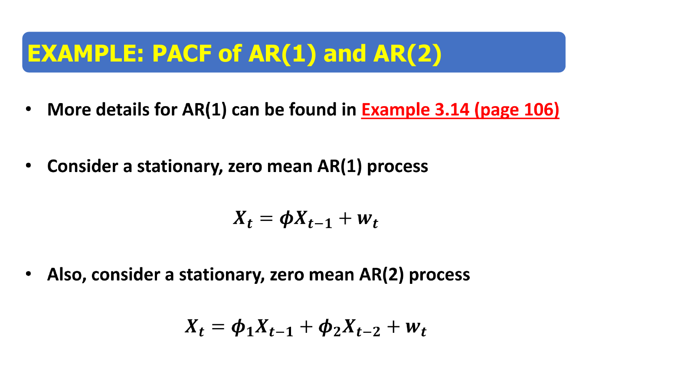
รายละเอียดของ AR(1) อยู่ใน Example 3.14 (page 106) สไลด์ให้พิจารณา stationary, zero mean AR(1) \(X_t=\phi X_{t-1}+w_t\) และ AR(2) \(X_t=\phi_1X_{t-1}+\phi_2X_{t-2}+w_t\) ใบงาน ARMA_properties หน้า 1 ให้หา \(\gamma(1)\), \(\gamma(2)\) และ PACF ของ AR(1) การ์ดต่อไปนี้ทำให้ครบ
จาก Lesson 5: \(\gamma(1)=\phi\gamma(0)\) และ \(\gamma(2)=\phi\gamma(1)=\phi^2\gamma(0)\) จึงได้ \(\rho(1)=\phi\) และ \(\rho(2)=\phi^2\)
\(\phi_{11}=\rho(1)=\phi\)
เป็น 0 ด้วยเหตุผลเดียวกัน
เหตุผลเชิงแนวคิด: ใน AR(1) ค่า \(X_t\) ขึ้นกับ \(X_{t-2}\) ผ่าน \(X_{t-1}\) เท่านั้น เมื่อรู้ \(X_{t-1}\) แล้ว \(X_{t-2}\) ไม่ให้ข้อมูลเพิ่ม ความสัมพันธ์โดยตรงที่ lag 2 จึงเป็นศูนย์ ทั้งที่ ACF ที่ lag 2 เป็น \(\phi^2\) ซึ่งไม่เป็นศูนย์
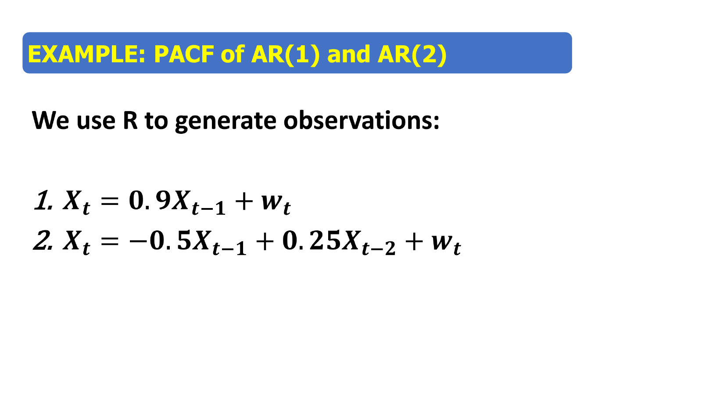
สไลด์ใช้ R สร้างข้อมูลจากสองโมเดล คือ \(X_t=0.9X_{t-1}+w_t\) และ \(X_t=-0.5X_{t-1}+0.25X_{t-2}+w_t\) ค่าทางทฤษฎีจาก ARMAacf มีดังนี้
| โมเดล | lag 1 | lag 2 | lag 3 | lag 4 | |
|---|---|---|---|---|---|
| AR(1), φ = 0.9 | ACF | 0.900 | 0.810 | 0.729 | 0.656 |
| PACF | 0.900 | 0 | 0 | 0 | |
| AR(2), φ = (−0.5, 0.25) | ACF | −0.667 | 0.583 | −0.458 | 0.375 |
| PACF | −0.667 | 0.250 | 0 | 0 |
ACF ของทั้งสองโมเดลค่อย ๆ ลดลงและไม่บอกอันดับ ส่วน PACF ของ AR(1) มีค่าเฉพาะ lag 1 และของ AR(2) มีค่าถึง lag 2 จำนวน lag ที่ PACF ไม่เป็นศูนย์เท่ากับอันดับของโมเดล
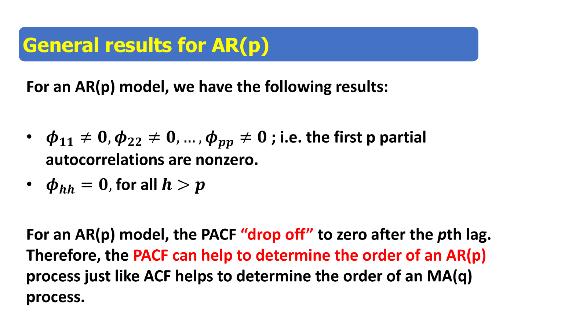
สำหรับ AR(p) มีผลสองข้อ ข้อแรก \(\phi_{11}\ne0,\phi_{22}\ne0,\dots,\phi_{pp}\ne0\) คือ partial autocorrelation p ตัวแรกไม่เป็นศูนย์ ข้อที่สอง \(\phi_{hh}=0\) สำหรับทุก \(h>p\) สไลด์สรุปว่า PACF ของ AR(p) “drop off” เป็นศูนย์หลัง lag ที่ p ดังนั้น PACF can help to determine the order of an AR(p) process เช่นเดียวกับที่ ACF ช่วยระบุอันดับของ MA(q)
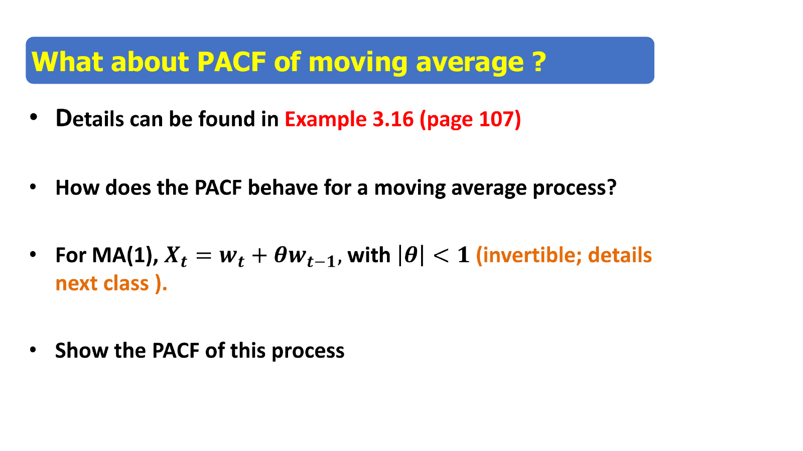
รายละเอียดอยู่ใน Example 3.16 (page 107) สไลด์ถามว่า PACF ของ moving average มีพฤติกรรมอย่างไร และให้พิจารณา MA(1) \(X_t=w_t+\theta w_{t-1}\) ที่ \(|\theta|<1\) โดยกำกับว่า (invertible; details next class ). แล้วให้แสดง PACF ของ process นี้ ผลตามตำราคือ \(\phi_{hh}=-\dfrac{(-\theta)^h(1-\theta^2)}{1-\theta^{2(h+1)}}\) สำหรับ \(h\ge1\) ค่านี้ไม่เป็นศูนย์ที่ lag ใดเลย แต่ขนาดลดลงเรื่อย ๆ เพราะมี \(\theta^h\) เป็นตัวคูณ PACF ของ MA จึง tails off สูตรนี้มาจากตำรา Shumway ตามที่สไลด์อ้าง ไม่ได้เขียนอยู่ในสไลด์
\(\phi_{11}=-\dfrac{(0.9)(1-0.81)}{1-0.9^4}=-\dfrac{0.171}{0.3439}=-0.497\) เท่ากับ \(\rho(1)=\theta/(1+\theta^2)=-0.9/1.81\)
\(\phi_{22}=-\dfrac{(0.81)(0.19)}{1-0.9^6}=-\dfrac{0.1539}{0.4686}=-0.328\)
ARMAacf(ma = -0.9, pacf=TRUE) ให้ −0.497, −0.328, −0.243, −0.191, −0.156 ตรงกัน ทุกค่าเป็นลบและขนาดลดลงช้า
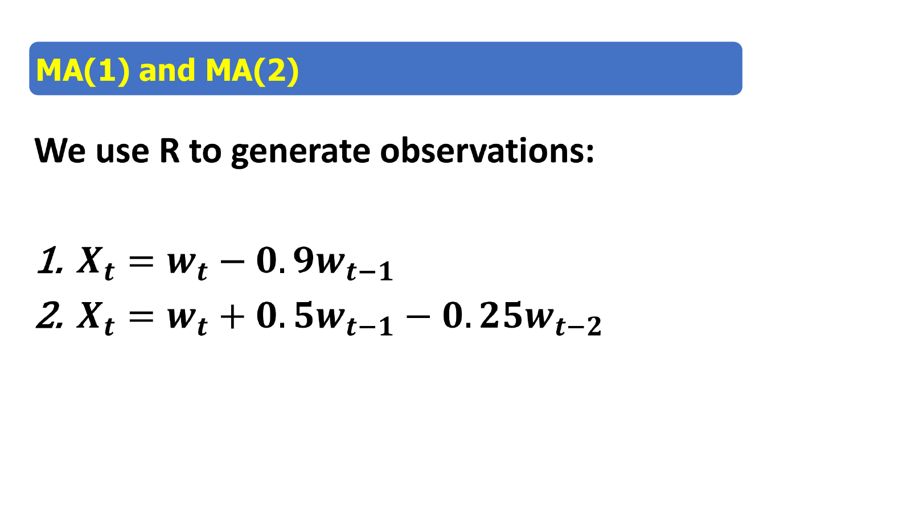
สไลด์ใช้ R สร้างข้อมูลจาก \(X_t=w_t-0.9w_{t-1}\) และ \(X_t=w_t+0.5w_{t-1}-0.25w_{t-2}\) ในไฟล์ R_codes เขียนเป็น ma = c(-0.9) และ ma = c(0.5,-0.25)
| โมเดล | lag 1 | lag 2 | lag 3 | lag 4 | lag 5 | |
|---|---|---|---|---|---|---|
| MA(1), θ = −0.9 | ACF | −0.497 | 0 | 0 | 0 | 0 |
| PACF | −0.497 | −0.328 | −0.243 | −0.191 | −0.156 | |
| MA(2), θ = (0.5, −0.25) | ACF | 0.286 | −0.190 | 0 | 0 | 0 |
| PACF | 0.286 | −0.296 | 0.185 | −0.151 | 0.115 |
รูปแบบกลับกันกับ AR: ACF ของ MA ตัดเป็นศูนย์หลัง lag q ส่วน PACF ค่อย ๆ ลดลงโดยไม่เป็นศูนย์
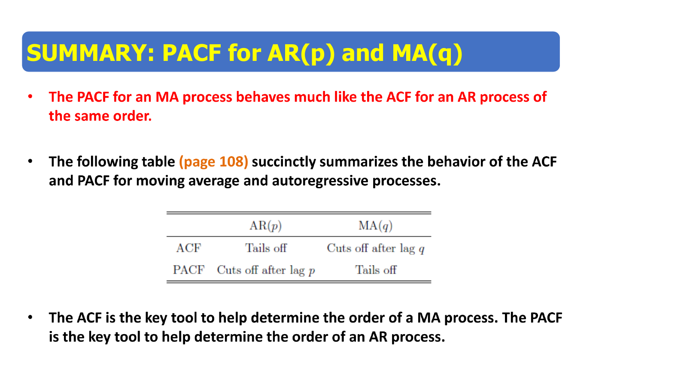
สไลด์สรุปเป็นข้อความสีแดง: The PACF for an MA process behaves much like the ACF for an AR process of the same order. และให้ตารางจากตำรา (page 108) ที่สรุปพฤติกรรมของ ACF และ PACF: ACF ของ AR(p) tails off และของ MA(q) cuts off after lag q ส่วน PACF ของ AR(p) cuts off after lag p และของ MA(q) tails off ดังนั้น ACF เป็นเครื่องมือหลักในการหาอันดับของ MA และ PACF เป็นเครื่องมือหลักในการหาอันดับของ AR
| AR(p) | MA(q) | ARMA(p,q) | |
|---|---|---|---|
| ACF | Tails off | Cuts off after lag q | Tails off |
| PACF | Cuts off after lag p | Tails off | Tails off |
คอลัมน์ ARMA(p,q) ไม่อยู่ในตารางของสไลด์หน้านี้ แต่เป็นส่วนที่ใบงาน ARMA_properties หน้า 2 เว้นให้เติม และเป็นผลมาตรฐานจากตำราหน้าเดียวกัน: ARMA มีทั้งส่วน AR และ MA ทั้งสองกราฟจึง tails off ซึ่งเป็นเหตุที่ต้องใช้ EACF ในหัวข้อ 11
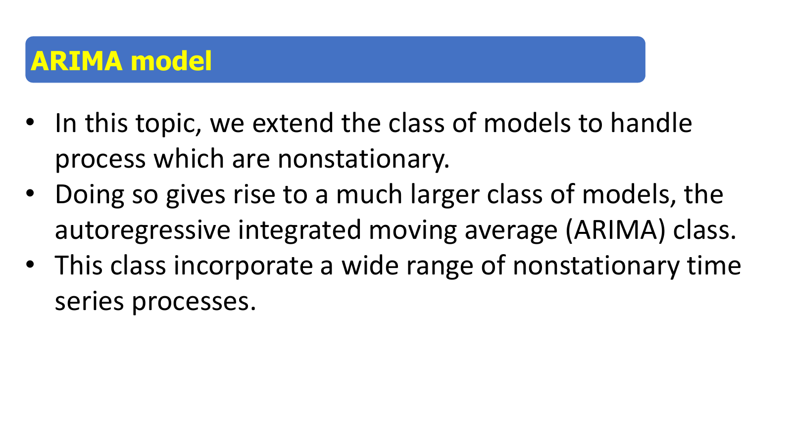
หัวข้อนี้ขยายตระกูลของโมเดลให้ใช้กับ process ที่ไม่ stationary ได้ ผลคือตระกูลของโมเดลที่ใหญ่ขึ้นมาก คือ autoregressive integrated moving average (ARIMA) ซึ่งรวม nonstationary time series ไว้หลากหลาย
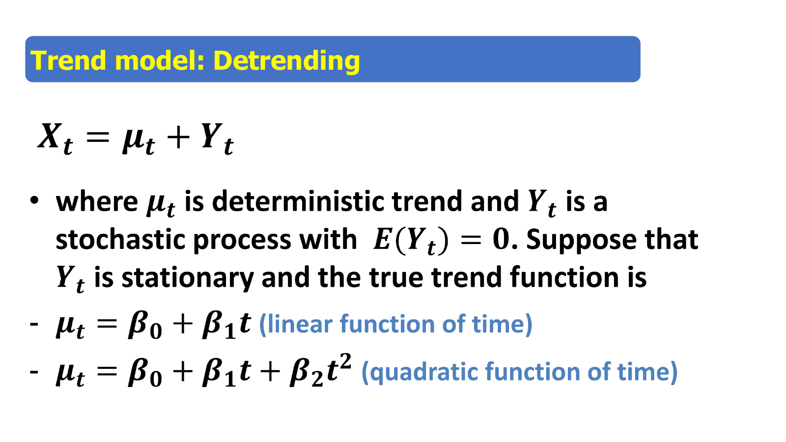
หน้านี้ทวนแนวทาง detrending จาก Lesson 3: \(X_t=\mu_t+Y_t\) โดย \(\mu_t\) เป็น deterministic trend และ \(Y_t\) เป็น stochastic process ที่ \(E(Y_t)=0\) สมมติว่า \(Y_t\) stationary และ trend ที่แท้จริงเป็น \(\mu_t=\beta_0+\beta_1t\) (linear function of time) หรือ \(\mu_t=\beta_0+\beta_1t+\beta_2t^2\) (quadratic function of time) สองกรณีนี้เชื่อมกับ differencing: trend เส้นตรงหายไปเมื่อทำผลต่างหนึ่งครั้ง และ trend กำลังสองหายไปเมื่อทำสองครั้ง ตัวอย่าง: 1, 4, 9, 16, 25 ซึ่งเป็น \(t^2\) มีผลต่างครั้งแรก 3, 5, 7, 9 ที่ยังเพิ่มขึ้น และผลต่างครั้งที่สอง 2, 2, 2 ที่คงที่
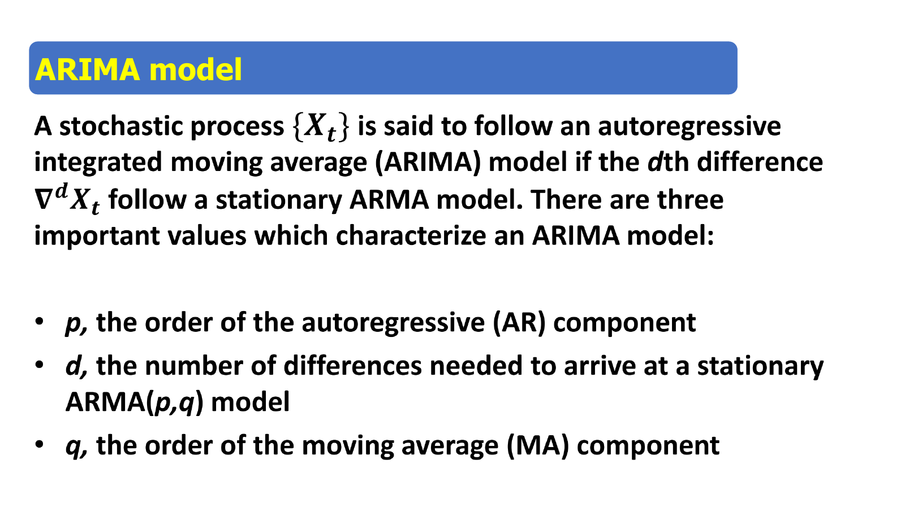
Stochastic process \(\{X_t\}\) เป็น ARIMA ถ้าผลต่างครั้งที่ d คือ \(\nabla^dX_t\) เป็น stationary ARMA model โมเดล ARIMA กำหนดด้วยค่าสำคัญสามค่า p คืออันดับของส่วน AR, d คือจำนวนครั้งของผลต่างที่ต้องทำเพื่อให้ได้ stationary ARMA(p,q) และ q คืออันดับของส่วน MA คำว่า integrated หมายถึงการกลับทิศของ differencing: ถ้าผลต่างเป็น ARMA ข้อมูลเดิมได้จากการบวกสะสมของ ARMA นั้น
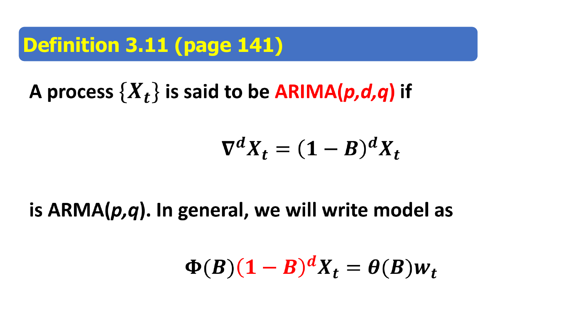
Process \(\{X_t\}\) เป็น ARIMA(p,d,q) ถ้า \(\nabla^dX_t=(1-B)^dX_t\) เป็น ARMA(p,q) โดยทั่วไปเขียนโมเดลเป็น \(\Phi(B)\)(1 − B)^d\(X_t=\theta(B)w_t\) ตัวคูณ \((1-B)^d\) คือส่วนที่เพิ่มจาก ARMA ถ้า \(d=0\) ตัวคูณนี้เท่ากับ 1 และโมเดลกลับเป็น ARMA
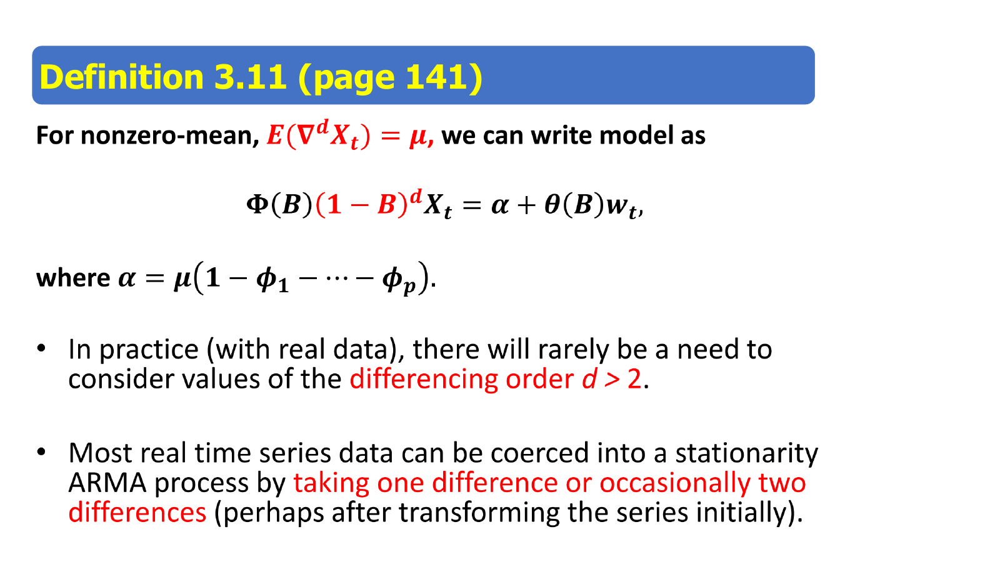
ถ้าผลต่างมีค่าเฉลี่ยไม่เป็นศูนย์ คือ E(∇^d X_t) = μ เขียนโมเดลเป็น \(\Phi(B)(1-B)^dX_t=\alpha+\theta(B)w_t\) โดย \(\alpha=\mu(1-\phi_1-\dots-\phi_p)\) ซึ่งเป็นความสัมพันธ์เดียวกับค่าคงที่ a ของ AR ใน Lesson 5 สไลด์ให้ข้อสังเกตเชิงปฏิบัติสองข้อ ข้อแรก กับข้อมูลจริง แทบไม่มีความจำเป็นต้องพิจารณา differencing order d > 2 ข้อที่สอง ข้อมูลจริงส่วนใหญ่ทำให้เป็น stationary ARMA ได้โดย taking one difference or occasionally two differences ซึ่งอาจทำหลังจากแปลงข้อมูลก่อน
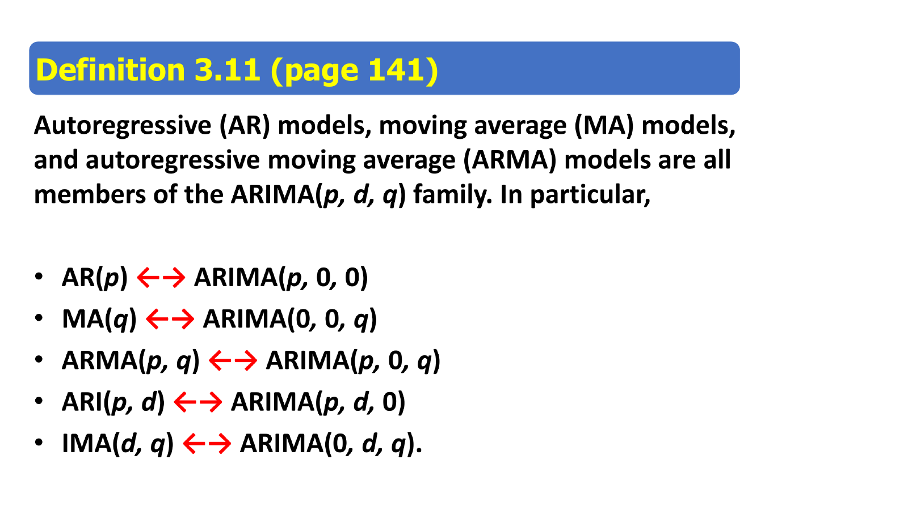
AR, MA และ ARMA เป็นสมาชิกของตระกูล ARIMA(p,d,q) ทั้งหมด AR(p) คือ ARIMA(p,0,0), MA(q) คือ ARIMA(0,0,q), ARMA(p,q) คือ ARIMA(p,0,q), ARI(p,d) คือ ARIMA(p,d,0) และ IMA(d,q) คือ ARIMA(0,d,q) ชื่อย่อได้จากการตัดส่วนที่มีอันดับเป็นศูนย์ออก
| ชื่อ | ARIMA(p,d,q) | มีส่วน AR | มี differencing | มีส่วน MA |
|---|---|---|---|---|
| AR(p) | (p, 0, 0) | มี | ไม่มี | ไม่มี |
| MA(q) | (0, 0, q) | ไม่มี | ไม่มี | มี |
| ARMA(p,q) | (p, 0, q) | มี | ไม่มี | มี |
| ARI(p,d) | (p, d, 0) | มี | มี | ไม่มี |
| IMA(d,q) | (0, d, q) | ไม่มี | มี | มี |
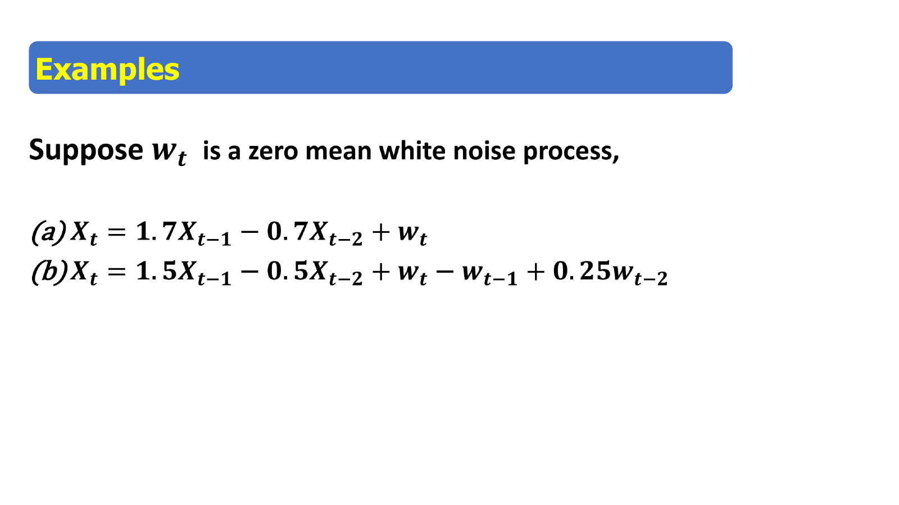
สไลด์ให้สองโมเดลโดยไม่มีเฉลย คือ (a) \(X_t=1.7X_{t-1}-0.7X_{t-2}+w_t\) และ (b) \(X_t=1.5X_{t-1}-0.5X_{t-2}+w_t-w_{t-1}+0.25w_{t-2}\) คำถามคือแต่ละโมเดลเป็น ARIMA(p,d,q) ใด ทั้งสองดูเหมือน AR(2) และ ARMA(2,2) แต่ต้องตรวจรากก่อน
\((1-1.7B+0.7B^2)X_t=w_t\)
\(1-1.7B+0.7B^2=(1-B)(1-0.7B)\) ตรวจ: \(1-0.7B-B+0.7B^2\)
\((1-0.7B)(1-B)X_t=w_t\) ตัวประกอบ \((1-B)\) คือผลต่างหนึ่งครั้ง ส่วนที่เหลือ \((1-0.7B)\) คือ AR(1) ที่ \(\phi=0.7\) ซึ่ง stationary ไม่มีส่วน MA
คำตอบ: ARIMA(1,1,0) หรือ ARI(1,1) กล่าวคือ \(\nabla X_t=0.7\nabla X_{t-1}+w_t\)
\((1-1.5B+0.5B^2)X_t=(1-B+0.25B^2)w_t\)
ซ้าย: \((1-B)(1-0.5B)\) และขวา: \((1-0.5B)^2\)
\((1-0.5B)\) อยู่ทั้งสองข้าง จึงตัดออกได้ เหลือ \((1-B)X_t=(1-0.5B)w_t\)
คำตอบ: ARIMA(0,1,1) หรือ IMA(1,1) กล่าวคือ \(X_t=X_{t-1}+w_t-0.5w_{t-1}\)
ตัวอย่างนี้แสดงสองเรื่อง ข้อแรก รากที่เท่ากับ 1 พอดีในฝั่ง AR ไม่ได้นับเป็นอันดับของ AR แต่นับเป็น differencing ตารางในหัวข้อ 2 แสดงว่า (1.7, −0.7) มีรากเท่ากับ 1 และ 1.429 ข้อที่สอง ตัวประกอบที่ซ้ำกันทั้งสองข้างต้องตัดออกก่อนนับอันดับ ซึ่งคือ parameter redundancy ในหัวข้อ 11
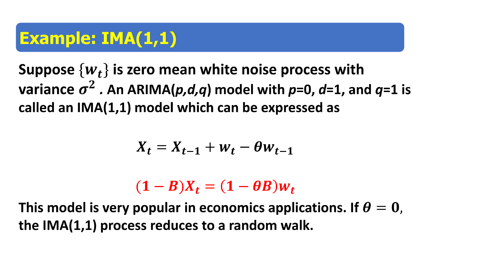
ให้ \(\{w_t\}\) เป็น zero mean white noise ที่มีความแปรปรวน \(\sigma^2\) ARIMA(p,d,q) ที่ p = 0, d = 1 และ q = 1 เรียกว่า IMA(1,1) เขียนได้เป็น \(X_t=X_{t-1}+w_t-\theta w_{t-1}\) หรือ (1 − B)X_t = (1 − θB)w_t สไลด์ระบุว่าโมเดลนี้นิยมมากในงานเศรษฐศาสตร์ และถ้า \(\theta=0\) IMA(1,1) ลดรูปเป็น random walk หน้านี้เขียนส่วน MA ด้วยเครื่องหมายลบ คือ \(-\theta w_{t-1}\) ซึ่งกลับกับรูป \(+\theta w_{t-1}\) ที่ R ใช้ โมเดลนี้เชื่อมกับ exponential smoothing: ใน Lesson 7 แสดงว่าค่าพยากรณ์ของ IMA(1,1) คือ simple exponential smoothing
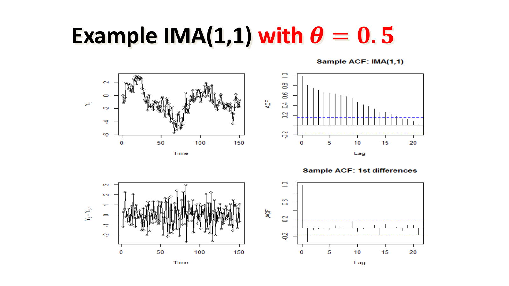
กราฟแสดง IMA(1,1) ที่ with θ = 0.5 จำนวน 150 ค่า ข้อมูลเดิมเคลื่อนระหว่างประมาณ −6 ถึง 3 โดยไม่กลับมาที่ระดับเดิม Sample ACF ของข้อมูลเดิมเริ่มใกล้ 1 และลดลงช้า ยังเกินขอบที่ lag 15 ซึ่งเป็นสัญญาณของ nonstationarity ผลต่างครั้งที่ 1 แกว่งรอบศูนย์ระหว่างประมาณ −2 ถึง 3 และ sample ACF ของผลต่างมีแท่งลบที่เกินขอบเฉพาะ lag 1 ตรงกับ MA(1) ค่าทางทฤษฎีของแท่งนั้นคือ \(-\theta/(1+\theta^2)=-0.5/1.25=-0.4\) เครื่องหมายลบมาจากรูป \(-\theta w_{t-1}\) ในไฟล์ R_codes ของ Lecture 7 กราฟนี้สร้างด้วย ma = c(-0.5)
ARIMA(p,d,q) ที่ p = 0, d = 2 และ q = 2 เรียกว่า IMA(2,2) เขียนได้เป็น (1 − B)²X_t = (1 − θ₁B − θ₂B²)w_t เนื่องจาก \(\nabla^2X_t=(1-B)^2X_t\) โมเดลจึงบอกว่าผลต่างครั้งที่ 2 ของข้อมูลเป็น MA(2) เมื่อกระจาย \((1-B)^2X_t=X_t-2X_{t-1}+X_{t-2}\) จะได้รูปเต็ม \(X_t=2X_{t-1}-X_{t-2}+w_t-\theta_1w_{t-1}-\theta_2w_{t-2}\)
กราฟแสดง IMA(2,2) จำนวน 150 ค่า ข้อมูลเดิมเป็นเส้นเรียบที่เพิ่มจาก 0 ถึงประมาณ 450 แล้วลดลง sample ACF ใกล้ 1 เกือบทุก lag ผลต่างครั้งที่ 1 ยังเคลื่อนเป็นช่วงยาวระหว่างประมาณ −8 ถึง 7 และ sample ACF ของผลต่างครั้งที่ 1 ยังลดลงช้า ผลต่างครั้งเดียวจึงไม่พอ ผลต่างครั้งที่ 2 แกว่งรอบศูนย์ระหว่างประมาณ −3 ถึง 3 และ sample ACF มีแท่งที่เกินขอบเฉพาะ lag ต้น ๆ ตรงกับ MA(2) จึงได้ d = 2 และ q = 2 ลำดับของการอ่านนี้คือกฎเลือก d ใน Lesson 7
ไฟล์ ARMA_properties เป็นใบงาน 9 หน้าที่เว้นช่องให้เติมระหว่างเรียน เนื้อหาเชื่อม Lecture 6 กับ Lecture 7 หัวข้อนี้แสดงทุกหน้าและเติมช่องที่เว้นไว้
หน้านี้ให้ AR(1) \(X_t=\phi_1X_{t-1}+w_t\) แล้วเว้นให้หา \(\gamma(1)\) และ \(\gamma(2)\) สรุป และ PACF ของ AR(1) คำตอบอยู่ในการ์ดในหัวข้อ 8: \(\gamma(1)=\phi_1\gamma(0)\), \(\gamma(2)=\phi_1^2\gamma(0)\) โดย \(\gamma(0)=\sigma^2/(1-\phi_1^2)\) สรุปคือ \(\gamma(h)=\phi_1^h\gamma(0)\) และ \(\rho(h)=\phi_1^h\) ส่วน PACF คือ \(\phi_{11}=\phi_1\) และ \(\phi_{hh}=0\) เมื่อ \(h\ge2\)
หน้านี้เว้นสามส่วน ส่วน Definition คือนิยามของ PACF: \(\phi_{11}=\rho(1)\) และ \(\phi_{hh}=\mathrm{corr}(X_h-X_h^{h-1},X_0-X_0^{h-1})\) ตามหัวข้อ 7 ส่วน PACF and ACF เป็นตารางสามแถว คือ AR(p), MA(q) และ ARMA(p,q) ซึ่งเติมได้ตามตารางท้ายหัวข้อ 8: AR(p) มี ACF tails off และ PACF cuts off after lag p, MA(q) มี ACF cuts off after lag q และ PACF tails off, ARMA(p,q) มีทั้งสอง tails off ส่วน Sample PACF คือการใช้สูตร Durbin-Levinson กับ sample autocorrelations ตามหน้า 37 ซึ่งใน R คือคำสั่ง pacf()
แผนภาพแสดงขั้นตอนของ Box-Jenkins เริ่มจาก Plot series แล้วถามว่า Is it stationary? ถ้าไม่ ให้ Difference “integrate” series แล้วถามใหม่ ถ้าใช่ ไปที่ Model identification ตามด้วย Model estimation แล้วถามว่า Is model adequate? ถ้าไม่ ให้ Modify model แล้วกลับไป identification ถ้าใช่ จึงทำ Forecasts แผนภาพมีวงวนสองวง วงแรกทำ differencing จนข้อมูล stationary วงที่สองปรับโมเดลจนผ่านการตรวจสอบ Lecture 7 ขยายทุกกล่องของแผนภาพนี้
ครึ่งล่างของหน้าเริ่มเรื่อง Some issues with ARMA models ARMA(p,q) เขียนว่า \(X_t=\alpha+\sum_{j=1}^{p}\phi_jX_{t-j}+\sum_{j=1}^{q}\theta_jw_{t-j}+w_t\) หรือ \(\Phi(B)X_t=\theta(B)w_t\) โดย \(\Phi(B)=1-\sum\phi_jB^j\) และ \(\theta(B)=1+\sum\theta_jB^j\) ประเด็นแรกคือ Parameter redundancy: ถ้า \(\Phi(z)\) และ \(\theta(z)\) มีตัวประกอบร่วม ตัวประกอบนั้นตัดออกได้ โมเดลจึงเหมือนกับโมเดลที่มีอันดับต่ำกว่า ใบงานระบุว่าจะสมมติว่าไม่มี redundancy ตัวอย่าง (b) ในหัวข้อ 9 เป็นกรณีนี้
Causality: ถ้า \(\Phi(z)\ne0\) สำหรับทุก \(|z|\le1\) แล้ว \(X_t\) เขียนได้ในรูปของ w ปัจจุบันและอดีต ใบงานระบุว่าจะสมมติ causality เงื่อนไขนี้พูดอีกแบบคือ \(\Phi\) ไม่มีรากในหรือบนวงกลมหนึ่งหน่วย ซึ่งเท่ากับรากทุกตัวมี modulus มากกว่า 1 Invertibility: ถ้า \(\theta(z)\ne0\) สำหรับทุก \(|z|\le1\) แล้ว \(w_t\) เขียนได้ในรูปของ X ปัจจุบันและอดีต และ \(X_t\) เขียนได้เป็น autoregression อันดับอนันต์ ใบงานระบุว่าจะสมมติ invertibility สองเงื่อนไขนี้เป็นคู่กัน: causality ตรวจฝั่ง AR และ invertibility ตรวจฝั่ง MA
อาจารย์ทำสี่ข้อนี้ในวิดีโอ TIME SERIES (CLASS 7-2) เฉลยต่อไปนี้ถอดจากกระดาษที่อาจารย์เขียน เวลาในวงเล็บคือตำแหน่งในวิดีโอ
\((1-0.3B)X_t=w_t\) และ \(\Phi(x)=1-0.3x=0\) ได้ \(|x|=1/0.3=3.33>1\) จึง causal และไม่มีส่วน MA จึง invertible
\(\theta(x)=1-1.3x+0.4x^2\) ใช้สูตรกำลังสองที่ \(a=0.4\), \(b=-1.3\), \(c=1\): \(b^2-4ac=0.09\) และ \(x=(1.3\pm0.3)/0.8=2\) และ \(1.25\) ทั้งสองมากกว่า 1 จึง invertible และไม่มีส่วน AR จึง causal
\((1-0.5B)X_t=(1-0.3B+1.2B^2)w_t\) ฝั่ง AR: \(x=2>1\) จึง causal ฝั่ง MA: \(D=(-0.3)^2-4(1.2)(1)=-4.71<0\) รากคือ \(0.125\pm0.904i\) มี modulus \(\sqrt{0.125^2+0.904^2}=0.913<1\) จึงไม่ invertible
\((1-0.4B-0.45B^2)X_t=(1+B+0.25B^2)w_t\) แยกตัวประกอบได้ \((1+0.5B)(1-0.9B)X_t=(1+0.5B)(1+0.5B)w_t\) ตัดตัวประกอบร่วม \((1+0.5B)\) เหลือ \((1-0.9B)X_t=(1+0.5B)w_t\) โมเดลเป็น ARMA(1,1) ไม่ใช่ ARMA(2,2) ฝั่ง AR: \(x=1/0.9=1.11>1\) จึง causal ฝั่ง MA: \(x=-2\), \(|x|=2>1\) จึง invertible
ข้อสรุปของข้อ 3 ว่าไม่ invertible เติมจากผล modulus 0.913 ตามเงื่อนไขในใบงาน ในเฟรมของวิดีโอที่อ่านได้ อาจารย์เขียนถึงค่า 0.913 คำตอบแบบเต็มที่ลอกได้และวิธีเขียนเป็น MA(∞) กับ AR(∞) อยู่ใน ใบคำตอบ Invertible และ Causal
บันทึกฉบับเต็มอยู่ใน video-notes/class-7-2.md
ในทางปฏิบัติ อันดับจริง p และ q ของ ARMA(p,q) ไม่ทราบค่าและต้องประมาณ ใบงานเสนอฟังก์ชันชนิดใหม่ที่เรียกว่า sample extended autocorrelation function (EACF) โดยอ้าง Cryer และ Chan (2008) เหตุที่ต้องมีเครื่องมือนี้คือ ARMA มี ACF และ PACF ที่ tails off ทั้งคู่ จึงอ่านอันดับจากสองกราฟนั้นไม่ได้ Theoretical EACF เป็นตารางที่แถวคืออันดับ AR และคอลัมน์คืออันดับ MA แต่ละช่องเป็น x หรือ 0 สำหรับ ARMA(1,1) แถว 0 เป็น x ทั้งหมด แถว 1 เป็น x ที่คอลัมน์ 0 แล้วเป็น 0 ตั้งแต่คอลัมน์ 1 แถว 2 เป็น 0 ตั้งแต่คอลัมน์ 2 และแถวถัดไปเริ่มเป็น 0 ช้าลงแถวละหนึ่งคอลัมน์
รูปแบบที่ต้องมองหา: ค่าศูนย์เรียงเป็นรูป “wedge” ที่มีปลายแหลมที่ตำแหน่ง (1,1) ปลายแหลมนี้ตรงกับ p = 1 และ q = 1 ของโมเดล ตาราง EACF ของ ARMA(2,2) มีแถว 0 และแถว 1 เป็น x ทั้งหมด และศูนย์เริ่มที่แถว 2 คอลัมน์ 2 ปลายของ wedge อยู่ที่ (2,2) จึงได้ p = 2 และ q = 2 ท้ายหน้าเริ่มตารางของ ARMA(2,1) ซึ่งต่อในหน้าถัดไป
ในตารางของ ARMA(2,1) ศูนย์เริ่มที่แถว 2 คอลัมน์ 1 ปลายของ wedge อยู่ที่ (2,1) จึงได้ p = 2 และ q = 1 ส่วน Sample EACF ใบงานเตือนสองข้อ ข้อแรก ตารางข้างต้นเป็นผลทางทฤษฎีสำหรับตัวอย่างขนาดใหญ่ไม่จำกัด กับข้อมูลจริงไม่ควรคาดว่าตารางจะมีรูปแบบชัดเจนเช่นนั้น ข้อที่สอง sample EACF อาจกำกวมและให้ข้อมูลน้อยหรือไม่ให้เลย โดยเฉพาะเมื่อ n เล็ก ท้ายหน้าเริ่มโค้ด R ด้วย library(TSA)
| โมเดล | ปลายของ wedge |
|---|---|
| ARMA(1,1) | แถว 1 คอลัมน์ 1 |
| ARMA(2,1) | แถว 2 คอลัมน์ 1 |
| ARMA(2,2) | แถว 2 คอลัมน์ 2 |
โค้ดจำลอง ARMA สามโมเดลที่มี n = 200 แล้วเรียก eacf() โมเดลแรกคือ ARMA(1,1) ที่ ar = c(0.6), ma = c(0.8) โมเดลที่สองคือ ARMA(2,2) ที่ ar = c(0.5,-0.5), ma = c(0.8,-0.2) และโมเดลที่สามคือ ARMA(3,3) ที่ ar = c(0.8,0.8,-0.9), ma = c(-0.9,0.8,-0.2) ใน arima.sim ใช้ order = c(p,0,q) และใส่ทั้ง ar และ ma
หน้านี้แสดงผลของ eacf() กับข้อมูลจำลองของ ARMA(2,2) และ ARMA(3,3) ตารางมีแถว 0 ถึง 7 และคอลัมน์ 0 ถึง 13 แสดงด้วยตัว x และ o ในตารางของ ARMA(2,2) แถว 2 เริ่มเป็น o ที่คอลัมน์ 2 และเป็น o ต่อเนื่องไปทางขวา ตรงกับปลายของ wedge ที่ (2,2) แต่มี x กระจายอยู่ในแถวอื่นโดยไม่เป็นรูปแบบ ซึ่งเป็นลักษณะของ sample EACF ที่ใบงานเตือนไว้ ตารางของ ARMA(3,3) อ่านยากกว่า เพราะ x กระจายมากกว่า ตัวอักษรในภาพมีขนาดเล็ก การอ่านตำแหน่งของ o ในบทเรียนนี้จึงเป็นค่าโดยประมาณ ผลของ eacf() เปลี่ยนทุกครั้งที่จำลองข้อมูลใหม่
ไฟล์ R_codes ของ Lecture 6 มีสามส่วน คือ ARMA(1,1), PACF และ EACF ส่วน EACF อธิบายแล้วในหัวข้อ 11 ค่าที่แสดงในหัวข้อนี้ได้จากการรัน ARMAacf
par(mfrow=c(2,2))
y = ARMAacf(ar = 0.9, ma = 0.25, lag.max = 20)
plot(y, x = 0:20, type = "h", ylim = c(-1,1), xlab = "h", ylab = "Autocorrelation", main = "ACF (phi=0.9, theta=0.25)")
abline(h = 0)โค้ดทำสี่กรณี คือ \(\phi=0.9,-0.9,0.5,-0.5\) โดย \(\theta=0.25\) ทุกกรณี จุดต่างจาก Lesson 5 คือใส่ทั้ง ar และ ma ในคำสั่งเดียว
| \((\phi,\theta)\) | \(\rho_1\) | \(\rho_2\) | \(\rho_3\) | \(\rho_4\) | รูปทรง |
|---|---|---|---|---|---|
| (0.9, 0.25) | 0.931 | 0.838 | 0.754 | 0.679 | บวก ลดลงช้า |
| (−0.9, 0.25) | −0.822 | 0.740 | −0.666 | 0.600 | สลับเครื่องหมาย ลดลงช้า |
| (0.5, 0.25) | 0.643 | 0.321 | 0.161 | 0.080 | บวก ลดลงเร็ว |
| (−0.5, 0.25) | −0.269 | 0.135 | −0.067 | 0.034 | สลับเครื่องหมาย ลดลงเร็ว |
ในทุกแถว ค่าตั้งแต่ lag 2 ได้จากการคูณ lag ก่อนหน้าด้วย \(\phi\) เช่น \(0.931\times0.9=0.838\) และ \(0.643\times0.5=0.321\) ACF ของ ARMA(1,1) จึงลดลงแบบเดียวกับ AR(1) ตั้งแต่ lag 2 ส่วนค่าที่ lag 1 ต่างจาก \(\phi\) เพราะส่วน MA: สูตรคือ \(\rho_1=\dfrac{(1+\phi\theta)(\phi+\theta)}{1+2\phi\theta+\theta^2}\) ตรวจกับแถวแรก: \((1.225)(1.15)/1.5125=0.931\) สูตรนี้มาจากตำรา ไม่อยู่ในสไลด์ ข้อสรุปคือ ACF ของ ARMA tails off เหมือน AR จึงแยก ARMA จาก AR ด้วย ACF ไม่ได้
y = ARMAacf(ar = c(0.9), lag.max = 20)
plot(y, x = 0:20, type = "h", ylim = c(-1,1), xlab = "h",
ylab = "Autocorrelation", main = "Population ACF")
abline(h = 0)
y = ARMAacf(ar = c(0.9), lag.max = 20, pacf=TRUE)
plot(y, x = 1:20, type = "h", ylim = c(-1,1), xlab = "h",
ylab = "Partial autocorrelation", main = "Population PACF")
abline(h = 0)| โค้ด | ทำอะไร |
|---|---|
| ARMAacf(ar = c(0.9), lag.max = 20) | ACF ทางทฤษฎีตั้งแต่ lag 0 ถึง 20 รวม 21 ค่า |
| plot(y, x = 0:20, ...) | แกนนอนเริ่มที่ 0 เพราะ ACF มีค่าที่ lag 0 |
| ARMAacf(ar = c(0.9), lag.max = 20, pacf=TRUE) | เพิ่ม pacf=TRUE ได้ PACF ทางทฤษฎีตั้งแต่ lag 1 ถึง 20 รวม 20 ค่า |
| plot(y, x = 1:20, ...) | แกนนอนเริ่มที่ 1 เพราะ PACF ไม่มีค่าที่ lag 0 ถ้าใช้ x = 0:20 จำนวนค่าจะไม่ตรงกันและ R แจ้ง error |
ไฟล์ทำคู่ ACF กับ PACF สี่โมเดล คือ AR(1) ที่ 0.9, AR(2) ที่ (−0.5, 0.25), MA(1) ที่ −0.9 และ MA(2) ที่ (0.5, −0.25) ค่าทั้งหมดอยู่ในตารางของหัวข้อ 8
par(mfrow=c(2,2))
ar1.sim <- arima.sim(list(order = c(1,0,0), ar = c(0.9)), n = 150)
ar2.sim <- arima.sim(list(order = c(2,0,0), ar = c(-0.5,0.25)), n = 150)
acf(ar1.sim,main="AR(1) sample ACF")
pacf(ar1.sim,main="AR(1) sample PACF")
acf(ar2.sim,main="AR(2) sample ACF")
pacf(ar2.sim,main="AR(2) sample PACF")คำสั่ง pacf() คำนวณและวาด sample PACF พร้อมเส้นประของขอบนัยสำคัญ ใช้คู่กับ acf() ส่วนของ MA ใช้โค้ดชุดเดียวกัน เปลี่ยนเป็น order = c(0,0,1), ma = c(-0.9) และ order = c(0,0,2), ma = c(0.5,-0.25) เมื่อ n = 150 ขอบคือ \(\pm2/\sqrt{150}=\pm0.163\)
ARMAacf(..., pacf=TRUE), pacf() และ eacf() และความต่างของแกนนอน 0:20 กับ 1:20ข้อต่อไปนี้ให้เขียนคำตอบเองก่อน แล้วจึงเปิดเฉลย
คูณ \(X_t=\phi_1X_{t-1}+\phi_2X_{t-2}+w_t\) ด้วย \(X_{t-h}\) แล้วหาค่าคาดหมาย
\(E(w_tX_{t-h})=0\) เมื่อ \(h\ge1\) จึงได้ \(\gamma_h=\phi_1\gamma_{h-1}+\phi_2\gamma_{h-2}\)
หารด้วย \(\gamma_0\): \(\rho_h=\phi_1\rho_{h-1}+\phi_2\rho_{h-2}\)
\(h=1\): \(\rho_1=\phi_1+\phi_2\rho_1\) จึงได้ \(\rho_1=\phi_1/(1-\phi_2)\)
\(h=2\): \(\rho_2=\phi_1\rho_1+\phi_2\)
(ก) \(\phi_1+\phi_2=0.94<1\), \(\phi_2-\phi_1=-2.06<1\), \(|\phi_2|=0.56<1\) ผ่านทั้งสามข้อ จึง stationary
(ข) ในราก: \(1.5^2+4(-0.56)=2.25-2.24=0.01\) รากที่สองคือ 0.1 ตัวหารคือ \(-2(-0.56)=1.12\)
\(x=(1.5\pm0.1)/1.12=1.429\) และ \(1.25\) รากจริงทั้งคู่และมากกว่า 1
(ค) \(\rho_1=1.5/(1+0.56)=0.962\) และ \(\rho_2=1.5(0.962)-0.56=0.882\)
AR(1) มี \(\rho(1)=\phi\) และ \(\rho(2)=\phi^2\)
\(\phi_{11}=\rho(1)=\phi\)
\(\phi_{22}=\dfrac{\rho(2)-\rho(1)^2}{1-\rho(1)^2}=\dfrac{\phi^2-\phi^2}{1-\phi^2}=0\)
\((1-1.5B+0.5B^2)X_t=(1-B+0.25B^2)w_t\)
ซ้าย: \((1-B)(1-0.5B)\) และขวา: \((1-0.5B)^2\)
ตัด \((1-0.5B)\) ที่ซ้ำกัน เหลือ \((1-B)X_t=(1-0.5B)w_t\)
p = 0, d = 1, q = 1 คือ ARIMA(0,1,1) หรือ IMA(1,1)
\(\mathrm{var}(Y_t)=\mathrm{var}(X_t)+\mathrm{var}(X_{t-1})-2\mathrm{Cov}(X_t,X_{t-1})=2\gamma_X(0)-2\gamma_X(1)\)
\(\gamma_X(1)=\phi\gamma_X(0)\) จึงได้ \(2\gamma_X(0)(1-\phi)\)
แทน \(\gamma_X(0)=\sigma^2/(1-\phi^2)\): \(\dfrac{2\sigma^2(1-\phi)}{(1-\phi)(1+\phi)}=\dfrac{2\sigma^2}{1+\phi}\)
ARMAacf, pacf, eacfบทถัดไป: Lesson 7 — การแปลงข้อมูล การเลือกโมเดล และการประมาณค่า
| หน้า | เนื้อหา | สอนที่ |
|---|---|---|
| 1 | ปก Model for Stationary Time Series (Part 2) | etc — ปก |
| 2–8 | Review: MA, AR, stationary condition, ARMA at first glance | หัวข้อ 1 |
| 9–15 | AR(2): characteristic equation และ stationarity conditions | หัวข้อ 2 |
| 16–19 | AR(2): autocorrelation function | หัวข้อ 3 |
| 20–24 | AR(2) Examples, AR(p), Comparison of AR(p) and MA(q) | หัวข้อ 4 |
| 25–26 | Exercise | หัวข้อ 5 |
| 27 | หน้าคั่น Partial Autocorrelation | etc — หน้าคั่น |
| 28–33 | PACF: แนวคิดและ partial correlation | หัวข้อ 6 |
| 34–37 | PACF: นิยามและ Durbin-Levinson | หัวข้อ 7 |
| 38–43 | PACF ของ AR และ MA, Summary | หัวข้อ 8 |
| 44 | หน้าคั่น Integrated Models for nonstationary data | etc — หน้าคั่น |
| 45–51 | ARIMA model, Definition 3.11, Examples | หัวข้อ 9 |
| 52–55 | IMA(1,1) และ IMA(2,2) | หัวข้อ 10 |
| ส่วน | สอนที่ |
|---|---|
| ใบงานหน้าปก | etc — ปก |
| ใบงานหน้า 1–9 | หัวข้อ 11 |
| R_codes: ARMA(1,1), PACF | หัวข้อ 12 |
| R_codes: EACF | หัวข้อ 11 |